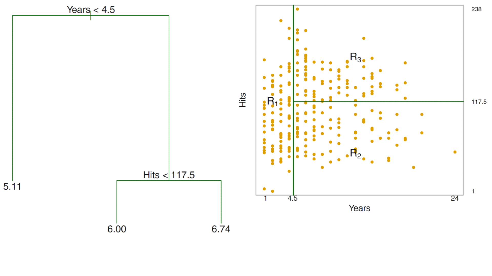
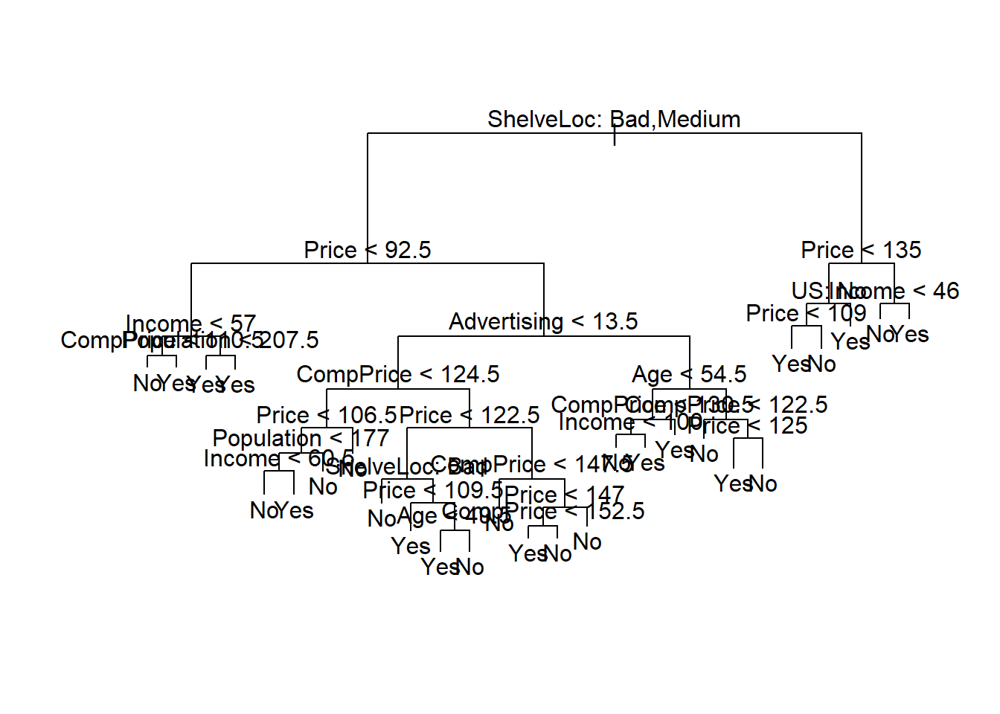
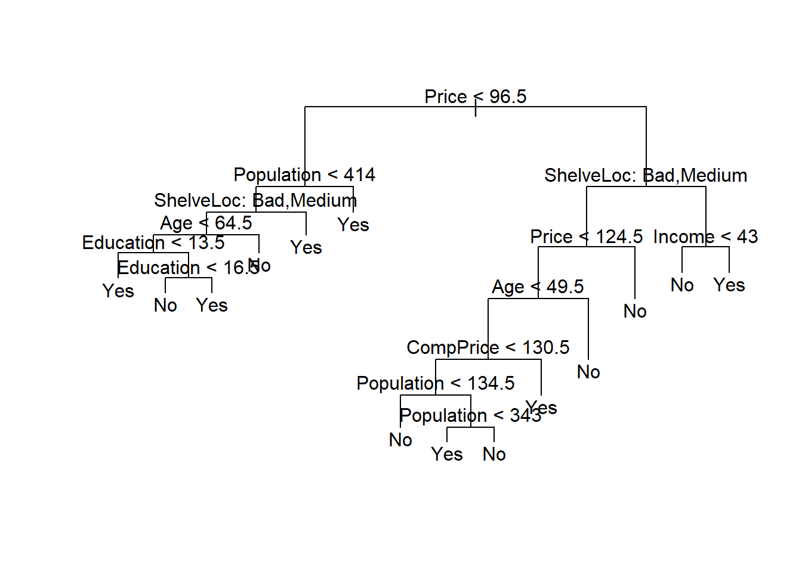

<!DOCTYPE html>
<html lang="es" xml:lang="es">
<head>

  <meta charset="utf-8" />
  <meta http-equiv="X-UA-Compatible" content="IE=edge" />
  <title>Capítulo 10 Arboles de decision | Ciencia de Datos</title>
  <meta name="description" content="BCRA" />
  <meta name="generator" content="bookdown 0.33 and GitBook 2.6.7" />

  <meta property="og:title" content="Capítulo 10 Arboles de decision | Ciencia de Datos" />
  <meta property="og:type" content="book" />
  
  <meta property="og:description" content="BCRA" />
  <meta name="github-repo" content="msangia/msangia.github" />

  <meta name="twitter:card" content="summary" />
  <meta name="twitter:title" content="Capítulo 10 Arboles de decision | Ciencia de Datos" />
  <meta name="twitter:site" content="@msangia" />
  <meta name="twitter:description" content="BCRA" />
  

<meta name="author" content="Máximo Sangiácomo" />


  <meta name="viewport" content="width=device-width, initial-scale=1" />
  <meta name="apple-mobile-web-app-capable" content="yes" />
  <meta name="apple-mobile-web-app-status-bar-style" content="black" />
  
  
<link rel="prev" href="logit.html"/>
<link rel="next" href="nnet.html"/>
<script src="libs/jquery-3.6.0/jquery-3.6.0.min.js"></script>
<script src="https://cdn.jsdelivr.net/npm/fuse.js@6.4.6/dist/fuse.min.js"></script>
<link href="libs/gitbook-2.6.7/css/style.css" rel="stylesheet" />
<link href="libs/gitbook-2.6.7/css/plugin-table.css" rel="stylesheet" />
<link href="libs/gitbook-2.6.7/css/plugin-bookdown.css" rel="stylesheet" />
<link href="libs/gitbook-2.6.7/css/plugin-highlight.css" rel="stylesheet" />
<link href="libs/gitbook-2.6.7/css/plugin-search.css" rel="stylesheet" />
<link href="libs/gitbook-2.6.7/css/plugin-fontsettings.css" rel="stylesheet" />
<link href="libs/gitbook-2.6.7/css/plugin-clipboard.css" rel="stylesheet" />


<link href="libs/anchor-sections-1.1.0/anchor-sections.css" rel="stylesheet" />
<link href="libs/anchor-sections-1.1.0/anchor-sections-hash.css" rel="stylesheet" />
<script src="libs/anchor-sections-1.1.0/anchor-sections.js"></script>
<html>
  <head>
	<link rel="shortcut icon" href="images/favicon.png" />
  </head>
  <body>
  </body>
</html>


<style type="text/css">
pre > code.sourceCode { white-space: pre; position: relative; }
pre > code.sourceCode > span { display: inline-block; line-height: 1.25; }
pre > code.sourceCode > span:empty { height: 1.2em; }
.sourceCode { overflow: visible; }
code.sourceCode > span { color: inherit; text-decoration: inherit; }
pre.sourceCode { margin: 0; }
@media screen {
div.sourceCode { overflow: auto; }
}
@media print {
pre > code.sourceCode { white-space: pre-wrap; }
pre > code.sourceCode > span { text-indent: -5em; padding-left: 5em; }
}
pre.numberSource code
  { counter-reset: source-line 0; }
pre.numberSource code > span
  { position: relative; left: -4em; counter-increment: source-line; }
pre.numberSource code > span > a:first-child::before
  { content: counter(source-line);
    position: relative; left: -1em; text-align: right; vertical-align: baseline;
    border: none; display: inline-block;
    -webkit-touch-callout: none; -webkit-user-select: none;
    -khtml-user-select: none; -moz-user-select: none;
    -ms-user-select: none; user-select: none;
    padding: 0 4px; width: 4em;
    color: #aaaaaa;
  }
pre.numberSource { margin-left: 3em; border-left: 1px solid #aaaaaa;  padding-left: 4px; }
div.sourceCode
  {   }
@media screen {
pre > code.sourceCode > span > a:first-child::before { text-decoration: underline; }
}
code span.al { color: #ff0000; font-weight: bold; } /* Alert */
code span.an { color: #60a0b0; font-weight: bold; font-style: italic; } /* Annotation */
code span.at { color: #7d9029; } /* Attribute */
code span.bn { color: #40a070; } /* BaseN */
code span.bu { } /* BuiltIn */
code span.cf { color: #007020; font-weight: bold; } /* ControlFlow */
code span.ch { color: #4070a0; } /* Char */
code span.cn { color: #880000; } /* Constant */
code span.co { color: #60a0b0; font-style: italic; } /* Comment */
code span.cv { color: #60a0b0; font-weight: bold; font-style: italic; } /* CommentVar */
code span.do { color: #ba2121; font-style: italic; } /* Documentation */
code span.dt { color: #902000; } /* DataType */
code span.dv { color: #40a070; } /* DecVal */
code span.er { color: #ff0000; font-weight: bold; } /* Error */
code span.ex { } /* Extension */
code span.fl { color: #40a070; } /* Float */
code span.fu { color: #06287e; } /* Function */
code span.im { } /* Import */
code span.in { color: #60a0b0; font-weight: bold; font-style: italic; } /* Information */
code span.kw { color: #007020; font-weight: bold; } /* Keyword */
code span.op { color: #666666; } /* Operator */
code span.ot { color: #007020; } /* Other */
code span.pp { color: #bc7a00; } /* Preprocessor */
code span.sc { color: #4070a0; } /* SpecialChar */
code span.ss { color: #bb6688; } /* SpecialString */
code span.st { color: #4070a0; } /* String */
code span.va { color: #19177c; } /* Variable */
code span.vs { color: #4070a0; } /* VerbatimString */
code span.wa { color: #60a0b0; font-weight: bold; font-style: italic; } /* Warning */
</style>

<style type="text/css">
/* Used with Pandoc 2.11+ new --citeproc when CSL is used */
div.csl-bib-body { }
div.csl-entry {
  clear: both;
}
.hanging div.csl-entry {
  margin-left:2em;
  text-indent:-2em;
}
div.csl-left-margin {
  min-width:2em;
  float:left;
}
div.csl-right-inline {
  margin-left:2em;
  padding-left:1em;
}
div.csl-indent {
  margin-left: 2em;
}
</style>

<link rel="stylesheet" href="css/style.css" type="text/css" />
<link rel="stylesheet" href="css/r4ds.css" type="text/css" />
</head>

<body>


  <div class="book without-animation with-summary font-size-2 font-family-1" data-basepath=".">

    <div class="book-summary">
      <nav role="navigation">

<ul class="summary">
<li><a href="./">Ciencia de Datos - BCRA</a></li>

<li class="divider"></li>
<li class="chapter" data-level="" data-path="index.html"><a href="index.html"><i class="fa fa-check"></i>Descripcion del curso</a></li>
<li class="chapter" data-level="1" data-path="intro.html"><a href="intro.html"><i class="fa fa-check"></i><b>1</b> Introduccion a R</a>
<ul>
<li class="chapter" data-level="1.1" data-path="intro.html"><a href="intro.html#primeros-pasos"><i class="fa fa-check"></i><b>1.1</b> Primeros pasos</a></li>
<li class="chapter" data-level="1.2" data-path="intro.html"><a href="intro.html#busacar-ayuda"><i class="fa fa-check"></i><b>1.2</b> Busacar ayuda</a></li>
<li class="chapter" data-level="1.3" data-path="intro.html"><a href="intro.html#tipos-de-datos"><i class="fa fa-check"></i><b>1.3</b> Tipos de datos</a></li>
<li class="chapter" data-level="1.4" data-path="intro.html"><a href="intro.html#limpieza-de-memoria"><i class="fa fa-check"></i><b>1.4</b> Limpieza de memoria</a></li>
<li class="chapter" data-level="1.5" data-path="intro.html"><a href="intro.html#asignación-de-valores"><i class="fa fa-check"></i><b>1.5</b> Asignación de valores</a></li>
<li class="chapter" data-level="1.6" data-path="intro.html"><a href="intro.html#operadores-aritméticos"><i class="fa fa-check"></i><b>1.6</b> Operadores aritméticos</a></li>
<li class="chapter" data-level="1.7" data-path="intro.html"><a href="intro.html#operadores-relacionales"><i class="fa fa-check"></i><b>1.7</b> Operadores relacionales</a></li>
<li class="chapter" data-level="1.8" data-path="intro.html"><a href="intro.html#operadores-lógicos"><i class="fa fa-check"></i><b>1.8</b> Operadores lógicos</a></li>
<li class="chapter" data-level="1.9" data-path="intro.html"><a href="intro.html#vectores"><i class="fa fa-check"></i><b>1.9</b> Vectores</a></li>
<li class="chapter" data-level="1.10" data-path="intro.html"><a href="intro.html#secuencias"><i class="fa fa-check"></i><b>1.10</b> Secuencias</a></li>
<li class="chapter" data-level="1.11" data-path="intro.html"><a href="intro.html#factores"><i class="fa fa-check"></i><b>1.11</b> Factores</a></li>
<li class="chapter" data-level="1.12" data-path="intro.html"><a href="intro.html#matrices"><i class="fa fa-check"></i><b>1.12</b> Matrices</a></li>
<li class="chapter" data-level="1.13" data-path="intro.html"><a href="intro.html#listas"><i class="fa fa-check"></i><b>1.13</b> Listas</a></li>
<li class="chapter" data-level="1.14" data-path="intro.html"><a href="intro.html#data-frames"><i class="fa fa-check"></i><b>1.14</b> Data frames</a></li>
<li class="chapter" data-level="1.15" data-path="intro.html"><a href="intro.html#r-base"><i class="fa fa-check"></i><b>1.15</b> R base</a></li>
<li class="chapter" data-level="1.16" data-path="intro.html"><a href="intro.html#apply-y-tapply"><i class="fa fa-check"></i><b>1.16</b> Apply y tapply</a></li>
<li class="chapter" data-level="1.17" data-path="intro.html"><a href="intro.html#map"><i class="fa fa-check"></i><b>1.17</b> Map</a></li>
<li class="chapter" data-level="1.18" data-path="intro.html"><a href="intro.html#loops"><i class="fa fa-check"></i><b>1.18</b> Loops</a></li>
<li class="chapter" data-level="1.19" data-path="intro.html"><a href="intro.html#condicionales"><i class="fa fa-check"></i><b>1.19</b> Condicionales</a></li>
<li class="chapter" data-level="1.20" data-path="intro.html"><a href="intro.html#funciones"><i class="fa fa-check"></i><b>1.20</b> Funciones</a>
<ul>
<li class="chapter" data-level="1.20.1" data-path="intro.html"><a href="intro.html#output-más-de-un-resultado"><i class="fa fa-check"></i><b>1.20.1</b> Output más de un resultado</a></li>
<li class="chapter" data-level="1.20.2" data-path="intro.html"><a href="intro.html#argumentos-con-valores-default"><i class="fa fa-check"></i><b>1.20.2</b> Argumentos con valores default</a></li>
</ul></li>
</ul></li>
<li class="chapter" data-level="2" data-path="bd.html"><a href="bd.html"><i class="fa fa-check"></i><b>2</b> Base de datos</a>
<ul>
<li class="chapter" data-level="2.1" data-path="bd.html"><a href="bd.html#directorio-de-trabajo"><i class="fa fa-check"></i><b>2.1</b> Directorio de trabajo</a></li>
<li class="chapter" data-level="2.2" data-path="bd.html"><a href="bd.html#cargar-datos"><i class="fa fa-check"></i><b>2.2</b> Cargar datos</a>
<ul>
<li class="chapter" data-level="2.2.1" data-path="bd.html"><a href="bd.html#ingrasar-datos-con-tidyverse"><i class="fa fa-check"></i><b>2.2.1</b> Ingrasar datos con <code>tidyverse</code></a></li>
<li class="chapter" data-level="2.2.2" data-path="bd.html"><a href="bd.html#bases-de-stata"><i class="fa fa-check"></i><b>2.2.2</b> Bases de Stata</a></li>
</ul></li>
<li class="chapter" data-level="2.3" data-path="bd.html"><a href="bd.html#problemas-de-imputación"><i class="fa fa-check"></i><b>2.3</b> Problemas de imputación</a></li>
<li class="chapter" data-level="2.4" data-path="bd.html"><a href="bd.html#exportar-datos"><i class="fa fa-check"></i><b>2.4</b> Exportar datos</a></li>
<li class="chapter" data-level="2.5" data-path="bd.html"><a href="bd.html#pipe"><i class="fa fa-check"></i><b>2.5</b> Pipe</a></li>
<li class="chapter" data-level="2.6" data-path="bd.html"><a href="bd.html#variables"><i class="fa fa-check"></i><b>2.6</b> Variables</a></li>
<li class="chapter" data-level="2.7" data-path="bd.html"><a href="bd.html#merge"><i class="fa fa-check"></i><b>2.7</b> Merge</a></li>
<li class="chapter" data-level="2.8" data-path="bd.html"><a href="bd.html#variables-group_by-mutate"><i class="fa fa-check"></i><b>2.8</b> Variables: group_by, mutate</a></li>
<li class="chapter" data-level="2.9" data-path="bd.html"><a href="bd.html#guardar-datos"><i class="fa fa-check"></i><b>2.9</b> Guardar datos</a></li>
<li class="chapter" data-level="2.10" data-path="bd.html"><a href="bd.html#valores-missing"><i class="fa fa-check"></i><b>2.10</b> Valores missing</a>
<ul>
<li class="chapter" data-level="2.10.1" data-path="bd.html"><a href="bd.html#eliminar-valores-missing"><i class="fa fa-check"></i><b>2.10.1</b> Eliminar valores missing</a></li>
</ul></li>
<li class="chapter" data-level="2.11" data-path="bd.html"><a href="bd.html#loop"><i class="fa fa-check"></i><b>2.11</b> Loop</a></li>
<li class="chapter" data-level="2.12" data-path="bd.html"><a href="bd.html#pivot-reshape"><i class="fa fa-check"></i><b>2.12</b> Pivot (Reshape)</a></li>
<li class="chapter" data-level="2.13" data-path="bd.html"><a href="bd.html#row-bind-append"><i class="fa fa-check"></i><b>2.13</b> Row bind (Append)</a></li>
<li class="chapter" data-level="2.14" data-path="bd.html"><a href="bd.html#strings"><i class="fa fa-check"></i><b>2.14</b> Strings</a></li>
<li class="chapter" data-level="2.15" data-path="bd.html"><a href="bd.html#fechas"><i class="fa fa-check"></i><b>2.15</b> Fechas</a>
<ul>
<li class="chapter" data-level="2.15.1" data-path="bd.html"><a href="bd.html#manipulación-de-fechas"><i class="fa fa-check"></i><b>2.15.1</b> Manipulación de fechas</a></li>
</ul></li>
<li class="chapter" data-level="2.16" data-path="bd.html"><a href="bd.html#análisis-de-datos"><i class="fa fa-check"></i><b>2.16</b> Análisis de datos</a>
<ul>
<li class="chapter" data-level="2.16.1" data-path="bd.html"><a href="bd.html#tablas"><i class="fa fa-check"></i><b>2.16.1</b> Tablas</a></li>
</ul></li>
<li class="chapter" data-level="2.17" data-path="bd.html"><a href="bd.html#group_by-summarise"><i class="fa fa-check"></i><b>2.17</b> group_by, summarise</a></li>
<li class="chapter" data-level="2.18" data-path="bd.html"><a href="bd.html#vector-de-resultados"><i class="fa fa-check"></i><b>2.18</b> Vector de resultados</a></li>
</ul></li>
<li class="chapter" data-level="3" data-path="gph1.html"><a href="gph1.html"><i class="fa fa-check"></i><b>3</b> Gráficos - Parte I</a>
<ul>
<li class="chapter" data-level="3.1" data-path="gph1.html"><a href="gph1.html#ggplot2"><i class="fa fa-check"></i><b>3.1</b> ggplot2</a></li>
<li class="chapter" data-level="3.2" data-path="gph1.html"><a href="gph1.html#estadísticas-con-ggplot2"><i class="fa fa-check"></i><b>3.2</b> Estadísticas con <code>ggplot2</code></a></li>
<li class="chapter" data-level="3.3" data-path="gph1.html"><a href="gph1.html#ggplot-position"><i class="fa fa-check"></i><b>3.3</b> GGPlot (position)</a></li>
<li class="chapter" data-level="3.4" data-path="gph1.html"><a href="gph1.html#time-series"><i class="fa fa-check"></i><b>3.4</b> Time series</a></li>
<li class="chapter" data-level="3.5" data-path="gph1.html"><a href="gph1.html#labels"><i class="fa fa-check"></i><b>3.5</b> Labels</a></li>
<li class="chapter" data-level="3.6" data-path="gph1.html"><a href="gph1.html#orden-de-factores-en-los-ejes-variables-string"><i class="fa fa-check"></i><b>3.6</b> Orden de factores en los ejes (variables string)</a></li>
<li class="chapter" data-level="3.7" data-path="gph1.html"><a href="gph1.html#guardar-un-gráfico"><i class="fa fa-check"></i><b>3.7</b> Guardar un gráfico</a></li>
</ul></li>
<li class="chapter" data-level="4" data-path="gph2.html"><a href="gph2.html"><i class="fa fa-check"></i><b>4</b> Gráficos - Parte II</a>
<ul>
<li class="chapter" data-level="4.1" data-path="gph2.html"><a href="gph2.html#títulos-en-los-ejes"><i class="fa fa-check"></i><b>4.1</b> Títulos en los ejes</a></li>
<li class="chapter" data-level="4.2" data-path="gph2.html"><a href="gph2.html#orden-de-los-graficos"><i class="fa fa-check"></i><b>4.2</b> Orden de los graficos</a></li>
<li class="chapter" data-level="4.3" data-path="gph2.html"><a href="gph2.html#agrandar-una-parte-del-grafico"><i class="fa fa-check"></i><b>4.3</b> Agrandar una parte del grafico</a></li>
<li class="chapter" data-level="4.4" data-path="gph2.html"><a href="gph2.html#escala-de-colores-manual"><i class="fa fa-check"></i><b>4.4</b> Escala de colores manual</a></li>
<li class="chapter" data-level="4.5" data-path="gph2.html"><a href="gph2.html#límites-epacios-y-etiquetas"><i class="fa fa-check"></i><b>4.5</b> Límites, epacios y etiquetas</a></li>
<li class="chapter" data-level="4.6" data-path="gph2.html"><a href="gph2.html#leyendas"><i class="fa fa-check"></i><b>4.6</b> Leyendas</a></li>
<li class="chapter" data-level="4.7" data-path="gph2.html"><a href="gph2.html#posición-de-la-leyenda"><i class="fa fa-check"></i><b>4.7</b> Posición de la leyenda</a></li>
<li class="chapter" data-level="4.8" data-path="gph2.html"><a href="gph2.html#estadísticas"><i class="fa fa-check"></i><b>4.8</b> Estadísticas</a></li>
<li class="chapter" data-level="4.9" data-path="gph2.html"><a href="gph2.html#unir-leyendas"><i class="fa fa-check"></i><b>4.9</b> Unir leyendas</a></li>
<li class="chapter" data-level="4.10" data-path="gph2.html"><a href="gph2.html#separar-leyendas"><i class="fa fa-check"></i><b>4.10</b> Separar leyendas</a></li>
<li class="chapter" data-level="4.11" data-path="gph2.html"><a href="gph2.html#agrupar-y-desagrupar"><i class="fa fa-check"></i><b>4.11</b> Agrupar y desagrupar</a></li>
<li class="chapter" data-level="4.12" data-path="gph2.html"><a href="gph2.html#themes"><i class="fa fa-check"></i><b>4.12</b> Themes</a></li>
</ul></li>
<li class="chapter" data-level="5" data-path="rmd.html"><a href="rmd.html"><i class="fa fa-check"></i><b>5</b> R Markdown</a>
<ul>
<li class="chapter" data-level="5.1" data-path="rmd.html"><a href="rmd.html#informes-con-r-markdown"><i class="fa fa-check"></i><b>5.1</b> Informes con R Markdown</a>
<ul>
<li class="chapter" data-level="5.1.1" data-path="rmd.html"><a href="rmd.html#intrormd"><i class="fa fa-check"></i><b>5.1.1</b> Introduccion</a></li>
<li class="chapter" data-level="5.1.2" data-path="rmd.html"><a href="rmd.html#referencias-cruzadas"><i class="fa fa-check"></i><b>5.1.2</b> Referencias cruzadas</a></li>
<li class="chapter" data-level="5.1.3" data-path="rmd.html"><a href="rmd.html#regresion"><i class="fa fa-check"></i><b>5.1.3</b> Regresion</a></li>
<li class="chapter" data-level="5.1.4" data-path="rmd.html"><a href="rmd.html#bullets"><i class="fa fa-check"></i><b>5.1.4</b> Bullets</a></li>
<li class="chapter" data-level="" data-path="rmd.html"><a href="rmd.html#bibliografia"><i class="fa fa-check"></i>Bibliografia</a></li>
</ul></li>
</ul></li>
<li class="chapter" data-level="6" data-path="conceptos.html"><a href="conceptos.html"><i class="fa fa-check"></i><b>6</b> Conceptos generales</a>
<ul>
<li class="chapter" data-level="6.1" data-path="conceptos.html"><a href="conceptos.html#estimacion"><i class="fa fa-check"></i><b>6.1</b> Estimacion</a></li>
<li class="chapter" data-level="6.2" data-path="conceptos.html"><a href="conceptos.html#prediccion"><i class="fa fa-check"></i><b>6.2</b> Prediccion</a></li>
<li class="chapter" data-level="6.3" data-path="conceptos.html"><a href="conceptos.html#inferencia"><i class="fa fa-check"></i><b>6.3</b> Inferencia</a></li>
<li class="chapter" data-level="6.4" data-path="conceptos.html"><a href="conceptos.html#metodos-parametricos"><i class="fa fa-check"></i><b>6.4</b> Metodos parametricos</a></li>
<li class="chapter" data-level="6.5" data-path="conceptos.html"><a href="conceptos.html#metodos-no-parametricos"><i class="fa fa-check"></i><b>6.5</b> Metodos no parametricos</a></li>
<li class="chapter" data-level="6.6" data-path="conceptos.html"><a href="conceptos.html#evaluacion-de-la-precision-del-modelo"><i class="fa fa-check"></i><b>6.6</b> Evaluacion de la precision del modelo</a>
<ul>
<li class="chapter" data-level="6.6.1" data-path="conceptos.html"><a href="conceptos.html#ajuste"><i class="fa fa-check"></i><b>6.6.1</b> Calidad del ajuste</a></li>
<li class="chapter" data-level="6.6.2" data-path="conceptos.html"><a href="conceptos.html#trade-off-sesgo-varianza"><i class="fa fa-check"></i><b>6.6.2</b> Trade-off Sesgo-Varianza</a></li>
<li class="chapter" data-level="6.6.3" data-path="conceptos.html"><a href="conceptos.html#clasificacion"><i class="fa fa-check"></i><b>6.6.3</b> Clasificacion</a></li>
<li class="chapter" data-level="6.6.4" data-path="conceptos.html"><a href="conceptos.html#confusion"><i class="fa fa-check"></i><b>6.6.4</b> Matriz de confusion</a></li>
<li class="chapter" data-level="6.6.5" data-path="conceptos.html"><a href="conceptos.html#roc"><i class="fa fa-check"></i><b>6.6.5</b> Curva ROC</a></li>
</ul></li>
<li class="chapter" data-level="6.7" data-path="conceptos.html"><a href="conceptos.html#resampling-methods"><i class="fa fa-check"></i><b>6.7</b> Resampling Methods</a>
<ul>
<li class="chapter" data-level="6.7.1" data-path="conceptos.html"><a href="conceptos.html#cv"><i class="fa fa-check"></i><b>6.7.1</b> Cross Validation</a></li>
<li class="chapter" data-level="6.7.2" data-path="conceptos.html"><a href="conceptos.html#bootstrap"><i class="fa fa-check"></i><b>6.7.2</b> Bootstrap</a></li>
</ul></li>
<li class="chapter" data-level="6.8" data-path="conceptos.html"><a href="conceptos.html#resumen"><i class="fa fa-check"></i><b>6.8</b> Resumen</a></li>
</ul></li>
<li class="chapter" data-level="7" data-path="mco.html"><a href="mco.html"><i class="fa fa-check"></i><b>7</b> Regresion lineal</a>
<ul>
<li class="chapter" data-level="7.1" data-path="mco.html"><a href="mco.html#relacion-entre-estimacion-optima-y-prediccion-optima"><i class="fa fa-check"></i><b>7.1</b> Relacion entre estimacion optima y prediccion optima</a></li>
<li class="chapter" data-level="7.2" data-path="mco.html"><a href="mco.html#aplicacion-practica"><i class="fa fa-check"></i><b>7.2</b> Aplicacion practica</a></li>
</ul></li>
<li class="chapter" data-level="8" data-path="shrinkage-methods.html"><a href="shrinkage-methods.html"><i class="fa fa-check"></i><b>8</b> Shrinkage Methods</a>
<ul>
<li class="chapter" data-level="8.1" data-path="shrinkage-methods.html"><a href="shrinkage-methods.html#lasso"><i class="fa fa-check"></i><b>8.1</b> LASSO</a></li>
<li class="chapter" data-level="8.2" data-path="shrinkage-methods.html"><a href="shrinkage-methods.html#ridge"><i class="fa fa-check"></i><b>8.2</b> <em>Ridge</em></a></li>
<li class="chapter" data-level="8.3" data-path="shrinkage-methods.html"><a href="shrinkage-methods.html#aplicacion-practica-1"><i class="fa fa-check"></i><b>8.3</b> Aplicacion practica</a></li>
</ul></li>
<li class="chapter" data-level="9" data-path="logit.html"><a href="logit.html"><i class="fa fa-check"></i><b>9</b> Logit</a>
<ul>
<li class="chapter" data-level="9.1" data-path="logit.html"><a href="logit.html#modelo-logit"><i class="fa fa-check"></i><b>9.1</b> Modelo <em>logit</em></a>
<ul>
<li class="chapter" data-level="9.1.1" data-path="logit.html"><a href="logit.html#interpretacion-de-coeficientes-en-el-modelo-logit"><i class="fa fa-check"></i><b>9.1.1</b> Interpretacion de coeficientes en el modelo <em>logit</em></a></li>
</ul></li>
<li class="chapter" data-level="9.2" data-path="logit.html"><a href="logit.html#aplicacion-practica-2"><i class="fa fa-check"></i><b>9.2</b> Aplicacion practica</a></li>
</ul></li>
<li class="chapter" data-level="10" data-path="arboles.html"><a href="arboles.html"><i class="fa fa-check"></i><b>10</b> Arboles de decision</a>
<ul>
<li class="chapter" data-level="10.1" data-path="arboles.html"><a href="arboles.html#classification-and-regression-tree-cart"><i class="fa fa-check"></i><b>10.1</b> <em>Classification and Regression Tree</em> (CART)</a></li>
<li class="chapter" data-level="10.2" data-path="arboles.html"><a href="arboles.html#bagging"><i class="fa fa-check"></i><b>10.2</b> Bagging</a></li>
<li class="chapter" data-level="10.3" data-path="arboles.html"><a href="arboles.html#random-forest"><i class="fa fa-check"></i><b>10.3</b> Random Forest</a></li>
<li class="chapter" data-level="10.4" data-path="arboles.html"><a href="arboles.html#boosting"><i class="fa fa-check"></i><b>10.4</b> Boosting</a>
<ul>
<li class="chapter" data-level="10.4.1" data-path="arboles.html"><a href="arboles.html#ada-boost"><i class="fa fa-check"></i><b>10.4.1</b> Ada Boost</a></li>
</ul></li>
<li class="chapter" data-level="10.5" data-path="arboles.html"><a href="arboles.html#aplicacion-practica-3"><i class="fa fa-check"></i><b>10.5</b> Aplicacion practica</a>
<ul>
<li class="chapter" data-level="10.5.1" data-path="arboles.html"><a href="arboles.html#arboles-de-clasificacion"><i class="fa fa-check"></i><b>10.5.1</b> Arboles de clasificacion</a></li>
<li class="chapter" data-level="10.5.2" data-path="arboles.html"><a href="arboles.html#compara"><i class="fa fa-check"></i><b>10.5.2</b> Comparacion de modelos para clasificacion</a></li>
<li class="chapter" data-level="10.5.3" data-path="arboles.html"><a href="arboles.html#grid-search"><i class="fa fa-check"></i><b>10.5.3</b> Grid search</a></li>
<li class="chapter" data-level="10.5.4" data-path="arboles.html"><a href="arboles.html#arboles-de-regresion"><i class="fa fa-check"></i><b>10.5.4</b> Arboles de regresion</a></li>
<li class="chapter" data-level="10.5.5" data-path="arboles.html"><a href="arboles.html#bagging-y-random-forests"><i class="fa fa-check"></i><b>10.5.5</b> Bagging y Random Forests</a></li>
<li class="chapter" data-level="10.5.6" data-path="arboles.html"><a href="arboles.html#boosting-1"><i class="fa fa-check"></i><b>10.5.6</b> Boosting</a></li>
</ul></li>
</ul></li>
<li class="chapter" data-level="11" data-path="nnet.html"><a href="nnet.html"><i class="fa fa-check"></i><b>11</b> Neural Networks</a>
<ul>
<li class="chapter" data-level="11.1" data-path="nnet.html"><a href="nnet.html#single-layer-neural-networks"><i class="fa fa-check"></i><b>11.1</b> Single Layer Neural Networks</a></li>
</ul></li>
<li class="chapter" data-level="12" data-path="cluster.html"><a href="cluster.html"><i class="fa fa-check"></i><b>12</b> Analisis de clusters</a>
<ul>
<li class="chapter" data-level="12.1" data-path="cluster.html"><a href="cluster.html#k-means-clustering"><i class="fa fa-check"></i><b>12.1</b> K-Means Clustering</a></li>
<li class="chapter" data-level="12.2" data-path="cluster.html"><a href="cluster.html#aplicacion-practica-4"><i class="fa fa-check"></i><b>12.2</b> Aplicacion practica</a></li>
</ul></li>
<li class="chapter" data-level="" data-path="bibliografia-1.html"><a href="bibliografia-1.html"><i class="fa fa-check"></i>Bibliografia</a></li>
<li class="divider"></li>
<li><a href="./" target="blank">Maximo Sangiacomo - GMyP</a></li>

</ul>

      </nav>
    </div>

    <div class="book-body">
      <div class="body-inner">
        <div class="book-header" role="navigation">
          <h1>
            <i class="fa fa-circle-o-notch fa-spin"></i><a href="./">Ciencia de Datos</a>
          </h1>
        </div>

        <div class="page-wrapper" tabindex="-1" role="main">
          <div class="page-inner">

            <section class="normal" id="section-">
<link href="css/style.css" rel="stylesheet">
<div class="hero-image-container"> 
  
</div>
<div id="arboles" class="section level1 hasAnchor" number="10">
<h1><span class="header-section-number">Capítulo 10</span> Arboles de decision<a href="arboles.html#arboles" class="anchor-section" aria-label="Anchor link to header"></a></h1>
<p>Los métodos basados en árboles para regresión y clasificación estratifican o segmentan el espacio predictor en varias regiones. Para hacer una predicción de una observación dada normalmente utiliza el valor de respuesta promedio de las observaciones de la base de entrenamiento en la región a la que pertenece. En el caso de clasificación se asigna a la categoría mayoritaria dentro del nodo terminal.</p>
<div id="classification-and-regression-tree-cart" class="section level2 hasAnchor" number="10.1">
<h2><span class="header-section-number">10.1</span> <em>Classification and Regression Tree</em> (CART)<a href="arboles.html#classification-and-regression-tree-cart" class="anchor-section" aria-label="Anchor link to header"></a></h2>
<p>En el caso de árboles de regresión, si <span class="math inline">\(Y\)</span> es la respuesta y <span class="math inline">\(X_1\)</span> y <span class="math inline">\(X_2\)</span> los <em>inputs</em> se parte el espacio <span class="math inline">\((X_1, X_2)\)</span> en dos regiones, en base a una sola variable (partición horizontal o vertical). Dentro de cada región proponemos como predicción la media muestral de <span class="math inline">\(Y\)</span>.</p>
<p>Se busca elegir la variable y el punto de partición de manera óptima (mejor ajuste global). Es computacionalmente inviable considerar cada posible partición del espacio de atributos en <span class="math inline">\(J\)</span> regiones. Por lo tanto, toma un enfoque <em>top-down greedy</em> que se conoce como división binaria recursiva. El enfoque es <em>top-down</em> porque comienza en la parte superior del árbol (en cuyo punto todas las observaciones pertenecen a una sola región) y luego divide sucesivamente el espacio predictor; cada división se indica a través de dos nuevas ramas más abajo en el árbol. Es <em>greedy</em> porque en cada paso del proceso de construcción del árbol, la mejor división se hace en ese paso en particular, en lugar de mirar hacia adelante y elegir una división que conducirá a un mejor árbol en algún paso futuro.</p>
<p>El panel izquierdo de la Figura <a href="arboles.html#fig:tree">10.1</a> muestra un árbol de regresión para predecir el logaritmo del salario (en miles de dólares) de un jugador de béisbol, basado en la cantidad de años que ha jugado en las ligas mayores y la cantidad de <em>hits</em> que hizo en el año anterior. En un nodo interno dado, la etiqueta (de la forma <span class="math inline">\(X_j &lt; t_k\)</span>) indica la rama izquierda que sale de esa división, y la rama de la derecha corresponde a <span class="math inline">\(X_j \ge t_k\)</span>. Por ejemplo, la división en la parte superior del árbol da como resultado dos ramas grandes. La rama izquierda corresponde a <code>Years &lt; 4,5</code>, y la rama derecha corresponde a <code>Years &gt;= 4,5</code>.<a href="#fn27" class="footnote-ref" id="fnref27"><sup>27</sup></a> El árbol tiene dos nodos internos y tres nodos terminales u hojas. El número en cada hoja es la media de la variable de respuesta de las observaciones que caen allí. Por ejemplo, la predicción para el nodo terminal de la izquierda es <span class="math inline">\(e^{5,107} \times 1.000 = \$165.174\)</span>. El panel derecho la Figura <a href="arboles.html#fig:tree">10.1</a> muestra las regiones en función de <code>Years</code> y <code>Hits</code>.</p>
<div class="figure" style="text-align: center"><span style="display:block;" id="fig:tree"></span>

<p class="caption">
Figura 10.1: Arbol de regresión
</p>
</div>
<p>Notar:</p>
<ul>
<li><p>Cada región tiene su propio modelo.</p></li>
<li><p>Ciertas variables importan en determinadas regiones y no en otras (<em>Hits</em>).</p></li>
</ul>
<p>Dado <span class="math inline">\(Y\)</span> y <span class="math inline">\(X\)</span> un vector de <span class="math inline">\(p\)</span> variables con <span class="math inline">\(n\)</span> observaciones el algoritmo busca determinar cuál variable usar para la partición y que punto de esa variable usar para la partición. Si <span class="math inline">\(j\)</span> es la variable de partición y el punto de partición es <span class="math inline">\(s\)</span>, se definen los siguientes semiplanos:</p>
<p><span class="math display">\[\begin{align*}
  R_1(j,s) = &amp; {X \mid X_j &lt; s} \\
  R_2(j,s) = &amp; {X \mid X_j \ge s}
\end{align*}\]</span></p>
<p>Se trata de buscar la variable de partición <span class="math inline">\(X_j\)</span> y el punto de partición <span class="math inline">\(s\)</span> que resuelvan (minimizar el <span class="math inline">\(EMC\)</span> en cada región):</p>
<p><span class="math display" id="eq:region">\[\begin{equation}
\tag{10.1}
  \sum_{i: x_i \in R_1(j,s)} (y_i - \hat{y}_{R_1})^2 +  \sum_{i: x_i \in R_2(j,s)} (y_i - \hat{y}_{R_2})^2
\end{equation}\]</span></p>
<p>Donde <span class="math inline">\(\hat{y}_{R_1}\)</span> y <span class="math inline">\(\hat{y}_{R_2}\)</span> es el promedio de la respuesta en las regiones <span class="math inline">\(1\)</span> y <span class="math inline">\(2\)</span>, respectivamente. Para cada variable y punto de partición, la minimización interna se corresponde con la <strong>media</strong> dentro de cada región.<a href="#fn28" class="footnote-ref" id="fnref28"><sup>28</sup></a></p>
<p><strong>¿Cuándo parar de realizar divisiones?</strong></p>
<p>Un árbol demasiado extenso sobreajusta (<em>overfit</em>) los datos. Pero dado que el proceso es secuencial y cada corte no mira lo que puede suceder después, si se detiene el proceso demasiado pronto se puede perder un “gran” corte más abajo. <em>Prunning</em>: ajustar un árbol grande y luego podarlo (<em>prune</em>) usando un criterio de <em>cost-complexity</em>.</p>
<p><strong><em>Weakest link pruning</em></strong></p>
<p>Un subárbol <span class="math inline">\(T \in T_0\)</span> es un árbol que se obtiene colapsando los nodos terminales de otro árbol (cortando ramas).</p>
<p><em>Cost-complexity</em> del árbol <span class="math inline">\(T\)</span>:</p>
<p><span class="math display" id="eq:cc">\[\begin{equation}
\tag{10.2}
   C_{\alpha}(T) = \sum_{m=1}^{|T|} n_mQ_m(T) + \alpha[T]
\end{equation}\]</span></p>
<p>con <span class="math inline">\(Q_m(T) = \frac{1}{n_m} \sum_{x_i \in R_m} (y_i - \hat{c}_m)^2\)</span> (impureza) y <span class="math inline">\(n_m\)</span> cantidad de observaciones en cada partición.</p>
<p>El primer término mide el (mal) ajuste y el segundo la complejidad. Cuando <span class="math inline">\(\alpha = 0\)</span>, entonces el subárbol <span class="math inline">\(T\)</span> simplemente será igual a <span class="math inline">\(T_0\)</span>, porque en ese caso <a href="arboles.html#eq:cc">(10.2)</a> solo mide el error de entrenamiento. Sin embargo, a medida que <span class="math inline">\(\alpha\)</span> aumenta, hay que pagar un costo por tener un árbol con muchos nodos terminales, por lo que <a href="arboles.html#eq:cc">(10.2)</a> tenderá a minimizarse para un subárbol más pequeño.<a href="#fn29" class="footnote-ref" id="fnref29"><sup>29</sup></a> Entonces el <strong>objetivo</strong> es, para un <span class="math inline">\(\alpha\)</span> dado, encontrar la poda óptima que minimiza <span class="math inline">\(C_{\alpha}(T)\)</span>.</p>
<p>Para cada <span class="math inline">\(\alpha\)</span> hay un único subárbol <span class="math inline">\(T_{\alpha}\)</span> que minimiza <span class="math inline">\(C_{\alpha}(T)\)</span>. El mecanismo de búsqueda de <span class="math inline">\(T_{\alpha}\)</span> (poda óptima dado <span class="math inline">\(\alpha\)</span>) de <em>weakest link</em> consite en eliminar sucesivamente las ramas que producen el mínimo incremento en <span class="math inline">\(\sum_{m=1}^{[T]} n_mQ_m(T)\)</span> (impureza). Recordar que un árbol grande aumenta la varianza, por lo tanto, se colapsa la partición menos necesaria. Un árbol más pequeño con menos divisiones (es decir, menos regiones <span class="math inline">\(R_1,...,R_J\)</span>) tiene menor varianza y es más fácil de interpretar a costa de un pequeño sesgo.</p>
<p>El proceso eventualmente colapsa en el nodo inicial, pero pasa por una sucesión de árboles, desde el más grande, hasta el más chico, por el proceso de <em>weakest link pruning</em>. El árbol óptimo <span class="math inline">\(T_{\alpha}\)</span> pertenece a esta sucesión.</p>
<p><strong><em>Classification tree</em></strong></p>
<p>Un árbol de clasificación es muy similar a un árbol de regresión, excepto que se utiliza para predecir una respuesta cualitativa en lugar de una cuantitativa. Recordar que para un árbol de regresión, la respuesta predicha para una observación esta dada por la respuesta media de las observaciones de entrenamiento que pertenecen al mismo nodo terminal. En contraste, para un árbol de clasificación, predice que cada observación pertenece a la clase que ocurre más comúnmente en las observaciones de entrenamiento en la región a la que pertenece. Se basa en el error de clasificación o índice de Gini (pureza), análogo a <span class="math inline">\(EMC\)</span> en un árbol de regresión.</p>
</div>
<div id="bagging" class="section level2 hasAnchor" number="10.2">
<h2><span class="header-section-number">10.2</span> Bagging<a href="arboles.html#bagging" class="anchor-section" aria-label="Anchor link to header"></a></h2>
<p>Ventajas y desventajas de <span class="math inline">\(CART\)</span>:</p>
<ul>
<li><p>Forma inteligente de representar no linealidades.</p></li>
<li><p>Arriba quedan las variables más relevantes entonces es fácil de comunicar. Reproduce proceso decisorio humano.</p></li>
<li><p>Si la estructura es lineal, <span class="math inline">\(CART\)</span> no anda bien.</p></li>
<li><p>Poco robusto, variaciones en los datos modifican el resultado.</p></li>
</ul>
<p>Un método de <em>ensemble</em> es un enfoque que combina muchos modelos simples en uno único y potencialmente muy poderoso. Los modelos simples se conocen como modelos de aprendizaje débil, ya que por sí mismos pueden generar predicciones mediocres.</p>
<p>Una posible solución es el <em>bootstrap aggregation</em> que consiste en tomar como predicción el promedio de las predicciones <em>bootstrap</em>.<a href="#fn30" class="footnote-ref" id="fnref30"><sup>30</sup></a></p>
<p><span class="math display" id="eq:bag">\[\begin{equation}
\tag{10.3}
   \hat{f}_{bag} = \frac{1}{B} \sum_{b=1}^{B} \hat{f}^{*b}(x)
\end{equation}\]</span></p>
<p>Esta idea se basa en que la varianza del promedio es menor que la de una predicción sola. Bajo independencia si <span class="math inline">\(V(x) = \sigma^2\)</span> entonces <span class="math inline">\(V(\overline{x}) = \frac{\sigma^2}{n}\)</span>. Pero existe el <strong>problema</strong> que si hay un predictor fuerte (siempre va a ser seleccionado primero), los distintos árboles son muy similares entre sí por lo que habrá alta correlación.</p>
</div>
<div id="random-forest" class="section level2 hasAnchor" number="10.3">
<h2><span class="header-section-number">10.3</span> Random Forest<a href="arboles.html#random-forest" class="anchor-section" aria-label="Anchor link to header"></a></h2>
<p>Busca bajar la correlación entre los árboles del <em>bootstrap</em>. Al igual que en <em>bagging</em>, construye una serie de árboles de decisión en muestras de entrenamiento <em>bootstrap</em>. Pero al construir estos árboles de decisión, cada vez que se considera una división en un árbol, se elige como candidatos de división una muestra aleatoria de <span class="math inline">\(m\)</span> predictores del conjunto completo de <span class="math inline">\(p\)</span> predictores (<span class="math inline">\(m &lt; p\)</span>).</p>
</div>
<div id="boosting" class="section level2 hasAnchor" number="10.4">
<h2><span class="header-section-number">10.4</span> Boosting<a href="arboles.html#boosting" class="anchor-section" aria-label="Anchor link to header"></a></h2>
<p>Tanto <em>bagging</em> como <em>random forest</em> son técnicas paralelas. Es decir, cada clasificador individual se construye independientemente de los otros. La ventaja es que se pueden crear muchos clasificadores simultáneamente, pero la desventaja de que los clasificadores no aprenden unos de otros.</p>
<p>En <em>boosting</em> los árboles van crecido secuencialmente, es decir, cada árbol crece usando información de árboles elaborados previamente. <em>Boosting</em> no implica un muestreo <em>bootstrap</em>; en cambio cada árbol se ajusta a una versión modificada de la base de datos original.</p>
<p><em>Boosting</em> se basa en el concepto de <strong><em>weak classifier</em></strong>: un clasificador marginalmente mejor que tirar una moneda, donde la tasa de error es apenas mejor que <span class="math inline">\(0,5\)</span>. Por ejemplo, un árbol como vimos en <span class="math inline">\(CART\)</span> con pocas ramas (<em>stump</em>: clasificador con dos ramas). El promedio ponderado de una sucesión de clasificadores débiles genera una notable mejora.</p>
<div id="ada-boost" class="section level3 hasAnchor" number="10.4.1">
<h3><span class="header-section-number">10.4.1</span> Ada Boost<a href="arboles.html#ada-boost" class="anchor-section" aria-label="Anchor link to header"></a></h3>
<p><em>Adaptive boosting</em>. Dadas las siguientes definiciones:</p>
<ul>
<li><p><span class="math inline">\(y \in -1,1\)</span></p></li>
<li><p>Clasificador: <span class="math inline">\(\hat{y} = G(X)\)</span></p></li>
<li><p>Error de predicción = <span class="math inline">\(\frac{1}{N} \sum_{i=1}^{N}I(y_i \neq G(x_i))\)</span></p></li>
</ul>
<p>Se describe el proceso:</p>
<ol style="list-style-type: decimal">
<li><p>Comienza con con pesos <span class="math inline">\(w_i = \frac{1}{N}\)</span></p></li>
<li><p>Para <span class="math inline">\(m = 1,...,M\)</span>:</p></li>
</ol>
<ul>
<li><p>Calcula una predicción</p></li>
<li><p>Calcula el error de predicción agregado</p></li>
<li><p>Calcula <span class="math inline">\(\alpha_m = ln[\frac{1 - err_m}{err_m}]\)</span></p></li>
<li><p>Actualiza los ponderadores <span class="math inline">\(w_i\)</span> <span class="math inline">\(\leftarrow\)</span> <span class="math inline">\(w_ic_i\)</span></p></li>
</ul>
<p>con <span class="math inline">\(c_i =\)</span> exp <span class="math inline">\([\alpha_m \underbrace{I(y_i \neq G(x_i))}_{{0/1}}]\)</span></p>
<ol start="3" style="list-style-type: decimal">
<li><em>Output</em>: <span class="math inline">\(G(x) =\)</span> sgn <span class="math inline">\([\sum_{m=1}^{M} \alpha_m G_m(x)]\)</span> (signo del promedio).</li>
</ol>
<p>Si <span class="math inline">\(i\)</span> estuvo correctamente predicha, <span class="math inline">\(c_i = 1\)</span>, entonces no hay ajuste. Caso contrario, <span class="math inline">\(c_i = e^{\alpha_m} = \frac{1 - err_m}{err_m} &gt; 1\)</span>. Notar que si siempre se predice la clase mayoritaria la tasa de error nunca puede ser mayor al <span class="math inline">\(50\%\)</span> y por eso la expresión anterior es mayor a <span class="math inline">\(1\)</span>.</p>
<p>En cada paso el método da más importancia relativa a las observaciones mal predichas. <strong>Paso final</strong>: promedio ponderado de predicciones en cada paso. La Figura <a href="arboles.html#fig:boost">10.2</a> muestra el proceso gráficamente.</p>
<div class="figure" style="text-align: center"><span style="display:block;" id="fig:boost"></span>

<p class="caption">
Figura 10.2: Ada boost
</p>
</div>
</div>
</div>
<div id="aplicacion-practica-3" class="section level2 hasAnchor" number="10.5">
<h2><span class="header-section-number">10.5</span> Aplicacion practica<a href="arboles.html#aplicacion-practica-3" class="anchor-section" aria-label="Anchor link to header"></a></h2>
<p>La biblioteca <code>tree</code> se utiliza para construir árboles de clasificación y regresión.</p>
<div class="infobox tip">
<p>Cada una de las metodologías que veremos a continuación posee hiperparámetos cuyos valores <em>default</em> pueden ser modificados en búsqueda de una mejor optimización. Se recomienda revisar el <code>help</code> de cada una para conocer las alternativas.</p>
</div>
<div id="arboles-de-clasificacion" class="section level3 hasAnchor" number="10.5.1">
<h3><span class="header-section-number">10.5.1</span> Arboles de clasificacion<a href="arboles.html#arboles-de-clasificacion" class="anchor-section" aria-label="Anchor link to header"></a></h3>
<div class="sourceCode" id="cb524"><pre class="sourceCode r"><code class="sourceCode r"><span id="cb524-1"><a href="arboles.html#cb524-1" aria-hidden="true" tabindex="-1"></a><span class="fu">library</span>(tree)</span></code></pre></div>
<p>Primero usamos árboles de clasificación para analizar la base de datos <code>Carseats</code>, donde <code>Sales</code> es una variable continua, por lo que comenzamos recodificándola como una variable binaria. Usamos la función <code>ifelse()</code> para crear una variable, llamada <code>High</code>,<a href="#fn31" class="footnote-ref" id="fnref31"><sup>31</sup></a> que toma un valor de <code>Yes</code> si la variable <code>Sales</code> excede <span class="math inline">\(8\)</span> y toma un valor de <code>No</code> en caso contrario.</p>
<div class="sourceCode" id="cb525"><pre class="sourceCode r"><code class="sourceCode r"><span id="cb525-1"><a href="arboles.html#cb525-1" aria-hidden="true" tabindex="-1"></a><span class="fu">library</span>(ISLR2)</span>
<span id="cb525-2"><a href="arboles.html#cb525-2" aria-hidden="true" tabindex="-1"></a><span class="fu">attach</span>(Carseats)</span>
<span id="cb525-3"><a href="arboles.html#cb525-3" aria-hidden="true" tabindex="-1"></a>High <span class="ot">&lt;-</span> <span class="fu">factor</span>(<span class="fu">ifelse</span>(Sales <span class="sc">&lt;=</span> <span class="dv">8</span>, <span class="st">&#39;No&#39;</span>, <span class="st">&#39;Yes&#39;</span>))</span></code></pre></div>
<p>Finalmente, usamos la función <code>data.frame()</code> para unir <code>High</code> con el resto de los datos de <code>Carseats</code>.</p>
<div class="sourceCode" id="cb526"><pre class="sourceCode r"><code class="sourceCode r"><span id="cb526-1"><a href="arboles.html#cb526-1" aria-hidden="true" tabindex="-1"></a>Carseats <span class="ot">&lt;-</span> <span class="fu">data.frame</span>(Carseats, High)</span></code></pre></div>
<p>Ahora usamos la función <code>tree()</code> para ajustar un árbol de clasificación con el fin de predecir <code>High</code> usando todas las variables excepto <code>Sales</code>. La sintaxis de la función <code>tree()</code> es bastante similar a la de la función <code>lm()</code>.</p>
<div class="sourceCode" id="cb527"><pre class="sourceCode r"><code class="sourceCode r"><span id="cb527-1"><a href="arboles.html#cb527-1" aria-hidden="true" tabindex="-1"></a>tree.carseats <span class="ot">&lt;-</span> <span class="fu">tree</span>(High <span class="sc">~</span> . <span class="sc">-</span> Sales, Carseats)</span>
<span id="cb527-2"><a href="arboles.html#cb527-2" aria-hidden="true" tabindex="-1"></a><span class="fu">summary</span>(tree.carseats)</span></code></pre></div>
<pre><code>## 
## Classification tree:
## tree(formula = High ~ . - Sales, data = Carseats)
## Variables actually used in tree construction:
## [1] &quot;ShelveLoc&quot;   &quot;Price&quot;       &quot;Income&quot;      &quot;CompPrice&quot;   &quot;Population&quot; 
## [6] &quot;Advertising&quot; &quot;Age&quot;         &quot;US&quot;         
## Number of terminal nodes:  27 
## Residual mean deviance:  0.4575 = 170.7 / 373 
## Misclassification error rate: 0.09 = 36 / 400</code></pre>
<p>Vemos que la tasa de error de entrenamiento es <span class="math inline">\(9\%\)</span>. Para árboles de clasificación, la desviación reportada en la salida de <code>summary()</code> esta
dada por:</p>
<p><span class="math display">\[
-2 \sum_m \sum_k n_{mk} \log \hat{p}_{mk},
\]</span></p>
<p>donde <span class="math inline">\(n_{mk}\)</span> es el número de observaciones en el nodo terminal <span class="math inline">\(m\)</span> que pertenecen a la clase <span class="math inline">\(k\)</span>. Una desviación pequeña indica un árbol que proporciona un buen ajuste a los datos (de entrenamiento). La <strong>desviación media residual</strong> informada es simplemente la desviación dividida por <span class="math inline">\(n-|{T}_0|\)</span>, que en este caso es <span class="math inline">\(400-27=373\)</span>.</p>
<p>Una de las propiedades más atractivas de los árboles es que se pueden representar gráficamente. Usamos la función <code>plot()</code> para mostrar la estructura de árbol y la función <code>text()</code> para mostrar las etiquetas de los nodos. El argumento <code>pretty = 0</code> indica a <code>R</code> que incluya los nombres de categoría para cualquier predictor cualitativo, en lugar de simplemente mostrar una letra para cada categoría.</p>
<div class="sourceCode" id="cb529"><pre class="sourceCode r"><code class="sourceCode r"><span id="cb529-1"><a href="arboles.html#cb529-1" aria-hidden="true" tabindex="-1"></a><span class="fu">plot</span>(tree.carseats)</span>
<span id="cb529-2"><a href="arboles.html#cb529-2" aria-hidden="true" tabindex="-1"></a><span class="fu">text</span>(tree.carseats, <span class="at">pretty =</span> <span class="dv">0</span>)</span></code></pre></div>
<p></p>
<p>La variable más importante para <code>Sales</code> parece ser la ubicación de las estanterías, ya que la primera rama diferencia las ubicaciones <code>Good</code> de las ubicaciones <code>Bad</code> y <code>Medium</code>.</p>
<p>Si solo escribimos el nombre del objeto del árbol, <code>R</code> imprime la salida correspondiente a cada rama del árbol. <code>R</code> muestra el criterio de división (ej. <code>Price &lt; 92,5</code>), el número de observaciones en esa rama, el desvío, la predicción general para la rama (<code>Yes</code> o <code>No</code>) y la fracción de observaciones en esa rama que toma valores de <code>Yes</code> y <code>No</code> (entre paréntesis). Las ramas que conducen a los nodos terminales se indican con asteriscos.</p>
<div class="sourceCode" id="cb530"><pre class="sourceCode r"><code class="sourceCode r"><span id="cb530-1"><a href="arboles.html#cb530-1" aria-hidden="true" tabindex="-1"></a>tree.carseats</span></code></pre></div>
<pre><code>## node), split, n, deviance, yval, (yprob)
##       * denotes terminal node
## 
##   1) root 400 541.500 No ( 0.59000 0.41000 )  
##     2) ShelveLoc: Bad,Medium 315 390.600 No ( 0.68889 0.31111 )  
##       4) Price &lt; 92.5 46  56.530 Yes ( 0.30435 0.69565 )  
##         8) Income &lt; 57 10  12.220 No ( 0.70000 0.30000 )  
##          16) CompPrice &lt; 110.5 5   0.000 No ( 1.00000 0.00000 ) *
##          17) CompPrice &gt; 110.5 5   6.730 Yes ( 0.40000 0.60000 ) *
##         9) Income &gt; 57 36  35.470 Yes ( 0.19444 0.80556 )  
##          18) Population &lt; 207.5 16  21.170 Yes ( 0.37500 0.62500 ) *
##          19) Population &gt; 207.5 20   7.941 Yes ( 0.05000 0.95000 ) *
##       5) Price &gt; 92.5 269 299.800 No ( 0.75465 0.24535 )  
##        10) Advertising &lt; 13.5 224 213.200 No ( 0.81696 0.18304 )  
##          20) CompPrice &lt; 124.5 96  44.890 No ( 0.93750 0.06250 )  
##            40) Price &lt; 106.5 38  33.150 No ( 0.84211 0.15789 )  
##              80) Population &lt; 177 12  16.300 No ( 0.58333 0.41667 )  
##               160) Income &lt; 60.5 6   0.000 No ( 1.00000 0.00000 ) *
##               161) Income &gt; 60.5 6   5.407 Yes ( 0.16667 0.83333 ) *
##              81) Population &gt; 177 26   8.477 No ( 0.96154 0.03846 ) *
##            41) Price &gt; 106.5 58   0.000 No ( 1.00000 0.00000 ) *
##          21) CompPrice &gt; 124.5 128 150.200 No ( 0.72656 0.27344 )  
##            42) Price &lt; 122.5 51  70.680 Yes ( 0.49020 0.50980 )  
##              84) ShelveLoc: Bad 11   6.702 No ( 0.90909 0.09091 ) *
##              85) ShelveLoc: Medium 40  52.930 Yes ( 0.37500 0.62500 )  
##               170) Price &lt; 109.5 16   7.481 Yes ( 0.06250 0.93750 ) *
##               171) Price &gt; 109.5 24  32.600 No ( 0.58333 0.41667 )  
##                 342) Age &lt; 49.5 13  16.050 Yes ( 0.30769 0.69231 ) *
##                 343) Age &gt; 49.5 11   6.702 No ( 0.90909 0.09091 ) *
##            43) Price &gt; 122.5 77  55.540 No ( 0.88312 0.11688 )  
##              86) CompPrice &lt; 147.5 58  17.400 No ( 0.96552 0.03448 ) *
##              87) CompPrice &gt; 147.5 19  25.010 No ( 0.63158 0.36842 )  
##               174) Price &lt; 147 12  16.300 Yes ( 0.41667 0.58333 )  
##                 348) CompPrice &lt; 152.5 7   5.742 Yes ( 0.14286 0.85714 ) *
##                 349) CompPrice &gt; 152.5 5   5.004 No ( 0.80000 0.20000 ) *
##               175) Price &gt; 147 7   0.000 No ( 1.00000 0.00000 ) *
##        11) Advertising &gt; 13.5 45  61.830 Yes ( 0.44444 0.55556 )  
##          22) Age &lt; 54.5 25  25.020 Yes ( 0.20000 0.80000 )  
##            44) CompPrice &lt; 130.5 14  18.250 Yes ( 0.35714 0.64286 )  
##              88) Income &lt; 100 9  12.370 No ( 0.55556 0.44444 ) *
##              89) Income &gt; 100 5   0.000 Yes ( 0.00000 1.00000 ) *
##            45) CompPrice &gt; 130.5 11   0.000 Yes ( 0.00000 1.00000 ) *
##          23) Age &gt; 54.5 20  22.490 No ( 0.75000 0.25000 )  
##            46) CompPrice &lt; 122.5 10   0.000 No ( 1.00000 0.00000 ) *
##            47) CompPrice &gt; 122.5 10  13.860 No ( 0.50000 0.50000 )  
##              94) Price &lt; 125 5   0.000 Yes ( 0.00000 1.00000 ) *
##              95) Price &gt; 125 5   0.000 No ( 1.00000 0.00000 ) *
##     3) ShelveLoc: Good 85  90.330 Yes ( 0.22353 0.77647 )  
##       6) Price &lt; 135 68  49.260 Yes ( 0.11765 0.88235 )  
##        12) US: No 17  22.070 Yes ( 0.35294 0.64706 )  
##          24) Price &lt; 109 8   0.000 Yes ( 0.00000 1.00000 ) *
##          25) Price &gt; 109 9  11.460 No ( 0.66667 0.33333 ) *
##        13) US: Yes 51  16.880 Yes ( 0.03922 0.96078 ) *
##       7) Price &gt; 135 17  22.070 No ( 0.64706 0.35294 )  
##        14) Income &lt; 46 6   0.000 No ( 1.00000 0.00000 ) *
##        15) Income &gt; 46 11  15.160 Yes ( 0.45455 0.54545 ) *</code></pre>
<p>Para evaluar correctamente la <em>performance</em> de un árbol de clasificación
con estos datos, debemos estimar el error de <em>test</em> en lugar de calcular el error de entrenamiento. Dividimos las observaciones en la base de entrenamiento y una base de <em>test</em>,<a href="#fn32" class="footnote-ref" id="fnref32"><sup>32</sup></a> se construye el árbol usando la base de entrenamiento, y se evalúa su desempeño en los datos en <em>test</em>. La función <code>predict()</code> se usa para este propósito. En el caso de un árbol de clasificación, el argumento <code>type = "class"</code> instruye a <code>R</code> para devolver una predicción de clase. Este modelo produce predicciones correctas en alrededor del <span class="math inline">\(77\%\)</span> de los casos en la base de datos de <em>test</em>.</p>
<div class="sourceCode" id="cb532"><pre class="sourceCode r"><code class="sourceCode r"><span id="cb532-1"><a href="arboles.html#cb532-1" aria-hidden="true" tabindex="-1"></a><span class="fu">set.seed</span>(<span class="dv">2</span>)</span>
<span id="cb532-2"><a href="arboles.html#cb532-2" aria-hidden="true" tabindex="-1"></a>train <span class="ot">&lt;-</span> <span class="fu">sample</span>(<span class="dv">1</span><span class="sc">:</span><span class="fu">nrow</span>(Carseats), <span class="dv">200</span>)</span>
<span id="cb532-3"><a href="arboles.html#cb532-3" aria-hidden="true" tabindex="-1"></a>Carseats.test <span class="ot">&lt;-</span> Carseats[<span class="sc">-</span>train, ]</span>
<span id="cb532-4"><a href="arboles.html#cb532-4" aria-hidden="true" tabindex="-1"></a>High.test <span class="ot">&lt;-</span> High[<span class="sc">-</span>train]</span>
<span id="cb532-5"><a href="arboles.html#cb532-5" aria-hidden="true" tabindex="-1"></a>tree.carseats <span class="ot">&lt;-</span> <span class="fu">tree</span>(High <span class="sc">~</span> . <span class="sc">-</span> Sales, Carseats, <span class="at">subset =</span> train)</span>
<span id="cb532-6"><a href="arboles.html#cb532-6" aria-hidden="true" tabindex="-1"></a>tree.pred <span class="ot">&lt;-</span> <span class="fu">predict</span>(tree.carseats, Carseats.test, <span class="at">type =</span> <span class="st">&quot;class&quot;</span>)</span>
<span id="cb532-7"><a href="arboles.html#cb532-7" aria-hidden="true" tabindex="-1"></a><span class="fu">table</span>(tree.pred, High.test)</span></code></pre></div>
<pre><code>##          High.test
## tree.pred  No Yes
##       No  104  33
##       Yes  13  50</code></pre>
<div class="sourceCode" id="cb534"><pre class="sourceCode r"><code class="sourceCode r"><span id="cb534-1"><a href="arboles.html#cb534-1" aria-hidden="true" tabindex="-1"></a>(<span class="dv">104</span> <span class="sc">+</span> <span class="dv">50</span>) <span class="sc">/</span> <span class="dv">200</span></span></code></pre></div>
<pre><code>## [1] 0.77</code></pre>
<p>A continuación, consideramos si podar el árbol podría llevar a mejores resultados. La función <code>cv.tree()</code> realiza una <em>cross-validation</em> para determinar el nivel óptimo de complejidad del árbol; se utiliza <em>cost complexity pruning</em> para seleccionar una secuencia de árboles.</p>
<p>Usamos el argumento <code>FUN = prune.misclass</code> para indicar que queremos que la tasa de error de clasificación guíe el proceso de <em>cross-validation</em> y poda, en lugar del valor predeterminado para la función <code>cv.tree()</code> que es el desvío. La función <code>cv.tree()</code> reporta el número de nodos terminales de cada árbol considerado (<code>size</code>), así como la tasa de error correspondiente (<code>dev</code>) y el valor del parámetro <em>cost complexity</em> utilizado (<code>k</code>, que corresponde a <span class="math inline">\(\alpha\)</span> en la ecuación <a href="arboles.html#eq:cc">(10.2)</a>).</p>
<div class="sourceCode" id="cb536"><pre class="sourceCode r"><code class="sourceCode r"><span id="cb536-1"><a href="arboles.html#cb536-1" aria-hidden="true" tabindex="-1"></a><span class="fu">set.seed</span>(<span class="dv">7</span>)</span>
<span id="cb536-2"><a href="arboles.html#cb536-2" aria-hidden="true" tabindex="-1"></a>cv.carseats <span class="ot">&lt;-</span> <span class="fu">cv.tree</span>(tree.carseats, <span class="at">FUN =</span> prune.misclass)</span>
<span id="cb536-3"><a href="arboles.html#cb536-3" aria-hidden="true" tabindex="-1"></a><span class="fu">names</span>(cv.carseats)</span></code></pre></div>
<pre><code>## [1] &quot;size&quot;   &quot;dev&quot;    &quot;k&quot;      &quot;method&quot;</code></pre>
<div class="sourceCode" id="cb538"><pre class="sourceCode r"><code class="sourceCode r"><span id="cb538-1"><a href="arboles.html#cb538-1" aria-hidden="true" tabindex="-1"></a>cv.carseats</span></code></pre></div>
<pre><code>## $size
## [1] 21 19 14  9  8  5  3  2  1
## 
## $dev
## [1] 75 75 75 74 82 83 83 85 82
## 
## $k
## [1] -Inf  0.0  1.0  1.4  2.0  3.0  4.0  9.0 18.0
## 
## $method
## [1] &quot;misclass&quot;
## 
## attr(,&quot;class&quot;)
## [1] &quot;prune&quot;         &quot;tree.sequence&quot;</code></pre>
<p>A pesar de su nombre, <code>dev</code> corresponde al número de errores de <em>cross-validation</em>. El árbol con 9 nodos terminales da como resultado solo 74 errores de <em>cross-validation</em>. Graficamos la tasa de error en función tanto del <code>size</code> y <code>k</code>.</p>
<div class="sourceCode" id="cb540"><pre class="sourceCode r"><code class="sourceCode r"><span id="cb540-1"><a href="arboles.html#cb540-1" aria-hidden="true" tabindex="-1"></a><span class="fu">par</span>(<span class="at">mfrow =</span> <span class="fu">c</span>(<span class="dv">1</span>, <span class="dv">2</span>))</span>
<span id="cb540-2"><a href="arboles.html#cb540-2" aria-hidden="true" tabindex="-1"></a><span class="fu">plot</span>(cv.carseats<span class="sc">$</span>size, cv.carseats<span class="sc">$</span>dev, <span class="at">type =</span> <span class="st">&quot;b&quot;</span>)</span>
<span id="cb540-3"><a href="arboles.html#cb540-3" aria-hidden="true" tabindex="-1"></a><span class="fu">plot</span>(cv.carseats<span class="sc">$</span>k, cv.carseats<span class="sc">$</span>dev, <span class="at">type =</span> <span class="st">&quot;b&quot;</span>)</span></code></pre></div>
<p></p>
<p>Ahora aplicamos la función <code>prune.misclass()</code> para podar el árbol y obtener el árbol de 9 nodos terminales.</p>
<div class="sourceCode" id="cb541"><pre class="sourceCode r"><code class="sourceCode r"><span id="cb541-1"><a href="arboles.html#cb541-1" aria-hidden="true" tabindex="-1"></a>prune.carseats <span class="ot">&lt;-</span> <span class="fu">prune.misclass</span>(tree.carseats, <span class="at">best =</span> <span class="dv">9</span>)</span>
<span id="cb541-2"><a href="arboles.html#cb541-2" aria-hidden="true" tabindex="-1"></a><span class="fu">plot</span>(prune.carseats)</span>
<span id="cb541-3"><a href="arboles.html#cb541-3" aria-hidden="true" tabindex="-1"></a><span class="fu">text</span>(prune.carseats, <span class="at">pretty =</span> <span class="dv">0</span>)</span></code></pre></div>
<p></p>
<p>¿Qué tan bien se desempeña este árbol podado en la base de datos de <em>test</em>? Una vez más, aplicamos la función <code>predict()</code>.</p>
<div class="sourceCode" id="cb542"><pre class="sourceCode r"><code class="sourceCode r"><span id="cb542-1"><a href="arboles.html#cb542-1" aria-hidden="true" tabindex="-1"></a>tree.pred <span class="ot">&lt;-</span> <span class="fu">predict</span>(prune.carseats, Carseats.test, <span class="at">type =</span> <span class="st">&quot;class&quot;</span>)</span>
<span id="cb542-2"><a href="arboles.html#cb542-2" aria-hidden="true" tabindex="-1"></a><span class="fu">table</span>(tree.pred, High.test)</span></code></pre></div>
<pre><code>##          High.test
## tree.pred No Yes
##       No  97  25
##       Yes 20  58</code></pre>
<div class="sourceCode" id="cb544"><pre class="sourceCode r"><code class="sourceCode r"><span id="cb544-1"><a href="arboles.html#cb544-1" aria-hidden="true" tabindex="-1"></a>(<span class="dv">97</span> <span class="sc">+</span> <span class="dv">58</span>) <span class="sc">/</span> <span class="dv">200</span></span></code></pre></div>
<pre><code>## [1] 0.775</code></pre>
<p>Ahora el <span class="math inline">\(77,5\%\)</span> de las observaciones de <em>test</em> se clasifican correctamente, por lo que el proceso de poda no solo produjo un árbol más interpretable, sino que también mejoró ligeramente la precisión de la clasificación.</p>
<p>Si aumentamos el valor de <code>best</code>, obtenemos un árbol podado más grande con menor precisión de clasificación:</p>
<div class="sourceCode" id="cb546"><pre class="sourceCode r"><code class="sourceCode r"><span id="cb546-1"><a href="arboles.html#cb546-1" aria-hidden="true" tabindex="-1"></a>prune.carseats <span class="ot">&lt;-</span> <span class="fu">prune.misclass</span>(tree.carseats, <span class="at">best =</span> <span class="dv">14</span>)</span>
<span id="cb546-2"><a href="arboles.html#cb546-2" aria-hidden="true" tabindex="-1"></a><span class="fu">plot</span>(prune.carseats)</span>
<span id="cb546-3"><a href="arboles.html#cb546-3" aria-hidden="true" tabindex="-1"></a><span class="fu">text</span>(prune.carseats, <span class="at">pretty =</span> <span class="dv">0</span>)</span></code></pre></div>
<p></p>
<div class="sourceCode" id="cb547"><pre class="sourceCode r"><code class="sourceCode r"><span id="cb547-1"><a href="arboles.html#cb547-1" aria-hidden="true" tabindex="-1"></a>tree.pred <span class="ot">&lt;-</span> <span class="fu">predict</span>(prune.carseats, Carseats.test, <span class="at">type =</span> <span class="st">&quot;class&quot;</span>)</span>
<span id="cb547-2"><a href="arboles.html#cb547-2" aria-hidden="true" tabindex="-1"></a><span class="fu">table</span>(tree.pred, High.test)</span></code></pre></div>
<pre><code>##          High.test
## tree.pred  No Yes
##       No  102  31
##       Yes  15  52</code></pre>
<div class="sourceCode" id="cb549"><pre class="sourceCode r"><code class="sourceCode r"><span id="cb549-1"><a href="arboles.html#cb549-1" aria-hidden="true" tabindex="-1"></a>(<span class="dv">102</span> <span class="sc">+</span> <span class="dv">52</span>) <span class="sc">/</span> <span class="dv">200</span></span></code></pre></div>
<pre><code>## [1] 0.77</code></pre>
<p>Para calcular el área bajo la curva (subsección <a href="conceptos.html#roc">6.6.5</a>) se deben estimar probabilidades. Por ello, volvemos a estimar el árbol óptimo con la opción <code>type = 'vector'</code> y el contraste contra la clase de interés.</p>
<div class="sourceCode" id="cb551"><pre class="sourceCode r"><code class="sourceCode r"><span id="cb551-1"><a href="arboles.html#cb551-1" aria-hidden="true" tabindex="-1"></a><span class="fu">library</span>(yardstick)</span>
<span id="cb551-2"><a href="arboles.html#cb551-2" aria-hidden="true" tabindex="-1"></a>prune.carseats <span class="ot">&lt;-</span> <span class="fu">prune.misclass</span>(tree.carseats, <span class="at">best =</span> <span class="dv">9</span>)</span>
<span id="cb551-3"><a href="arboles.html#cb551-3" aria-hidden="true" tabindex="-1"></a>tree.pred9 <span class="ot">&lt;-</span> <span class="fu">predict</span>(prune.carseats, Carseats.test, <span class="at">type =</span> <span class="st">&quot;vector&quot;</span>)</span>
<span id="cb551-4"><a href="arboles.html#cb551-4" aria-hidden="true" tabindex="-1"></a></span>
<span id="cb551-5"><a href="arboles.html#cb551-5" aria-hidden="true" tabindex="-1"></a>prune.carseats <span class="ot">&lt;-</span> <span class="fu">prune.misclass</span>(tree.carseats, <span class="at">best =</span> <span class="dv">14</span>)</span>
<span id="cb551-6"><a href="arboles.html#cb551-6" aria-hidden="true" tabindex="-1"></a>tree.pred14 <span class="ot">&lt;-</span> <span class="fu">predict</span>(prune.carseats, Carseats.test, <span class="at">type =</span> <span class="st">&quot;vector&quot;</span>)</span>
<span id="cb551-7"><a href="arboles.html#cb551-7" aria-hidden="true" tabindex="-1"></a></span>
<span id="cb551-8"><a href="arboles.html#cb551-8" aria-hidden="true" tabindex="-1"></a>bd <span class="ot">=</span> <span class="fu">data.frame</span>(<span class="at">obs=</span><span class="fu">factor</span>(High.test), <span class="at">pred=</span>tree.pred9[,<span class="st">&#39;Yes&#39;</span>])</span>
<span id="cb551-9"><a href="arboles.html#cb551-9" aria-hidden="true" tabindex="-1"></a><span class="fu">roc_auc</span>(bd, <span class="at">truth=</span>obs, pred, <span class="at">event_level =</span> <span class="st">&#39;second&#39;</span>)<span class="sc">$</span>.estimate</span></code></pre></div>
<pre><code>## [1] 0.7921429</code></pre>
<p>Curva ROC:</p>
<div class="sourceCode" id="cb553"><pre class="sourceCode r"><code class="sourceCode r"><span id="cb553-1"><a href="arboles.html#cb553-1" aria-hidden="true" tabindex="-1"></a><span class="fu">library</span>(ggplot2)</span>
<span id="cb553-2"><a href="arboles.html#cb553-2" aria-hidden="true" tabindex="-1"></a>plot_roc <span class="ot">=</span> <span class="cf">function</span>(tab_obs_pred) {</span>
<span id="cb553-3"><a href="arboles.html#cb553-3" aria-hidden="true" tabindex="-1"></a>  tab <span class="ot">=</span> tab_obs_pred <span class="sc">|&gt;</span> </span>
<span id="cb553-4"><a href="arboles.html#cb553-4" aria-hidden="true" tabindex="-1"></a>  <span class="fu">pivot_longer</span>(<span class="sc">-</span>obs, <span class="at">names_to=</span><span class="st">&quot;Modelo&quot;</span>, <span class="at">values_to=</span><span class="st">&quot;prob&quot;</span>) </span>
<span id="cb553-5"><a href="arboles.html#cb553-5" aria-hidden="true" tabindex="-1"></a>  tab <span class="sc">|&gt;</span> </span>
<span id="cb553-6"><a href="arboles.html#cb553-6" aria-hidden="true" tabindex="-1"></a>  <span class="fu">group_by</span>(Modelo) <span class="sc">|&gt;</span>  </span>
<span id="cb553-7"><a href="arboles.html#cb553-7" aria-hidden="true" tabindex="-1"></a>  <span class="fu">roc_curve</span>(obs, prob, <span class="at">event_level =</span> <span class="st">&#39;second&#39;</span>) <span class="sc">|&gt;</span> </span>
<span id="cb553-8"><a href="arboles.html#cb553-8" aria-hidden="true" tabindex="-1"></a>  <span class="fu">autoplot</span>()</span>
<span id="cb553-9"><a href="arboles.html#cb553-9" aria-hidden="true" tabindex="-1"></a>}</span>
<span id="cb553-10"><a href="arboles.html#cb553-10" aria-hidden="true" tabindex="-1"></a>tab <span class="ot">=</span> <span class="fu">tibble</span>(</span>
<span id="cb553-11"><a href="arboles.html#cb553-11" aria-hidden="true" tabindex="-1"></a>  <span class="at">obs =</span> <span class="fu">factor</span>(High.test),</span>
<span id="cb553-12"><a href="arboles.html#cb553-12" aria-hidden="true" tabindex="-1"></a>  <span class="at">Tree9 =</span> tree.pred9[,<span class="st">&#39;Yes&#39;</span>],</span>
<span id="cb553-13"><a href="arboles.html#cb553-13" aria-hidden="true" tabindex="-1"></a>  <span class="at">Tree14 =</span> tree.pred14[,<span class="st">&#39;Yes&#39;</span>],</span>
<span id="cb553-14"><a href="arboles.html#cb553-14" aria-hidden="true" tabindex="-1"></a>  <span class="at">Azar =</span> <span class="fu">runif</span>(<span class="fu">nrow</span>(bd), <span class="dv">0</span>, <span class="dv">1</span>)</span>
<span id="cb553-15"><a href="arboles.html#cb553-15" aria-hidden="true" tabindex="-1"></a>)</span>
<span id="cb553-16"><a href="arboles.html#cb553-16" aria-hidden="true" tabindex="-1"></a><span class="fu">plot_roc</span>(tab)</span></code></pre></div>
<p></p>
</div>
<div id="compara" class="section level3 hasAnchor" number="10.5.2">
<h3><span class="header-section-number">10.5.2</span> Comparacion de modelos para clasificacion<a href="arboles.html#compara" class="anchor-section" aria-label="Anchor link to header"></a></h3>
<div class="infobox important">
<p>Ideas para el <strong>Trabajo Práctico Final</strong>.</p>
</div>
<p>En esta subsección se presenta la aplicación de 3 modelos diferentes <code>rpart</code> (CART), <code>ranger</code> (<em>Random Forest</em>) y <code>lightgbm</code> (<em>Boosting</em>) y se compara la <em>performace</em> a través de la curva ROC. Por lo tanto, en todos los casos se predicen probabilidades.</p>
<p>Notar que, por un lado, se puede optimizar (<em>tuning</em>) hiperparámetros y, por el otro, se puede predecir la clase para luego construir la matriz de confusión. Tareas para el TPF…</p>
<p>Comenzamos. Primero se cargan las librerías y se generan los datos a utilizar.</p>
<div class="sourceCode" id="cb554"><pre class="sourceCode r"><code class="sourceCode r"><span id="cb554-1"><a href="arboles.html#cb554-1" aria-hidden="true" tabindex="-1"></a><span class="fu">library</span>(rpart)</span>
<span id="cb554-2"><a href="arboles.html#cb554-2" aria-hidden="true" tabindex="-1"></a><span class="fu">library</span>(ranger)</span>
<span id="cb554-3"><a href="arboles.html#cb554-3" aria-hidden="true" tabindex="-1"></a><span class="fu">library</span>(lightgbm)</span>
<span id="cb554-4"><a href="arboles.html#cb554-4" aria-hidden="true" tabindex="-1"></a><span class="fu">library</span>(Matrix)</span>
<span id="cb554-5"><a href="arboles.html#cb554-5" aria-hidden="true" tabindex="-1"></a><span class="fu">library</span>(mltools)</span>
<span id="cb554-6"><a href="arboles.html#cb554-6" aria-hidden="true" tabindex="-1"></a><span class="fu">library</span>(data.table)</span>
<span id="cb554-7"><a href="arboles.html#cb554-7" aria-hidden="true" tabindex="-1"></a><span class="fu">library</span>(tidyverse)</span>
<span id="cb554-8"><a href="arboles.html#cb554-8" aria-hidden="true" tabindex="-1"></a></span>
<span id="cb554-9"><a href="arboles.html#cb554-9" aria-hidden="true" tabindex="-1"></a>Carseats.train <span class="ot">&lt;-</span> Carseats[train, ]</span>
<span id="cb554-10"><a href="arboles.html#cb554-10" aria-hidden="true" tabindex="-1"></a>High.train <span class="ot">&lt;-</span> High[train]</span>
<span id="cb554-11"><a href="arboles.html#cb554-11" aria-hidden="true" tabindex="-1"></a></span>
<span id="cb554-12"><a href="arboles.html#cb554-12" aria-hidden="true" tabindex="-1"></a>formula  <span class="ot">&lt;-</span>  <span class="fu">formula</span>(High <span class="sc">~</span> . <span class="sc">-</span> Sales)</span></code></pre></div>
<p>Aplicación de <code>rpart</code>.</p>
<div class="sourceCode" id="cb555"><pre class="sourceCode r"><code class="sourceCode r"><span id="cb555-1"><a href="arboles.html#cb555-1" aria-hidden="true" tabindex="-1"></a>rpart.mod <span class="ot">=</span> <span class="fu">rpart</span>(formula,</span>
<span id="cb555-2"><a href="arboles.html#cb555-2" aria-hidden="true" tabindex="-1"></a>                  <span class="at">data =</span> Carseats.train,  </span>
<span id="cb555-3"><a href="arboles.html#cb555-3" aria-hidden="true" tabindex="-1"></a>                  <span class="at">control =</span> <span class="fu">rpart.control</span>(<span class="at">minsplit =</span> <span class="dv">20</span>, </span>
<span id="cb555-4"><a href="arboles.html#cb555-4" aria-hidden="true" tabindex="-1"></a>                                          <span class="at">minbucket =</span> <span class="dv">6</span>,</span>
<span id="cb555-5"><a href="arboles.html#cb555-5" aria-hidden="true" tabindex="-1"></a>                                          <span class="at">cp =</span> <span class="dv">0</span>, </span>
<span id="cb555-6"><a href="arboles.html#cb555-6" aria-hidden="true" tabindex="-1"></a>                                          <span class="at">xval =</span> <span class="dv">0</span>, </span>
<span id="cb555-7"><a href="arboles.html#cb555-7" aria-hidden="true" tabindex="-1"></a>                                          <span class="at">maxdepth =</span> <span class="dv">16</span>))</span>
<span id="cb555-8"><a href="arboles.html#cb555-8" aria-hidden="true" tabindex="-1"></a>rpart.prob <span class="ot">=</span> <span class="fu">predict</span>(rpart.mod, Carseats.test)</span>
<span id="cb555-9"><a href="arboles.html#cb555-9" aria-hidden="true" tabindex="-1"></a></span>
<span id="cb555-10"><a href="arboles.html#cb555-10" aria-hidden="true" tabindex="-1"></a>rpartVarImp <span class="ot">=</span> <span class="fu">as_tibble_row</span>(rpart.mod<span class="sc">$</span>variable.importance) <span class="sc">%&gt;%</span></span>
<span id="cb555-11"><a href="arboles.html#cb555-11" aria-hidden="true" tabindex="-1"></a>  <span class="fu">pivot_longer</span>(<span class="fu">everything</span>(), <span class="at">names_to =</span> <span class="st">&#39;Variable&#39;</span>, <span class="at">values_to =</span> <span class="st">&#39;Value&#39;</span>) <span class="sc">%&gt;%</span></span>
<span id="cb555-12"><a href="arboles.html#cb555-12" aria-hidden="true" tabindex="-1"></a>  <span class="fu">arrange</span>(<span class="fu">desc</span>(Value)) </span>
<span id="cb555-13"><a href="arboles.html#cb555-13" aria-hidden="true" tabindex="-1"></a>rpartVarImp</span></code></pre></div>
<pre><code>## # A tibble: 10 × 2
##    Variable     Value
##    &lt;chr&gt;        &lt;dbl&gt;
##  1 Price       17.1  
##  2 Age         10.5  
##  3 CompPrice    9.44 
##  4 ShelveLoc    7.47 
##  5 Population   5.52 
##  6 Income       5.12 
##  7 Advertising  3.69 
##  8 Education    1.85 
##  9 US           1.81 
## 10 Urban        0.817</code></pre>
<p>Aplicación de <code>ranger</code>.</p>
<div class="sourceCode" id="cb557"><pre class="sourceCode r"><code class="sourceCode r"><span id="cb557-1"><a href="arboles.html#cb557-1" aria-hidden="true" tabindex="-1"></a><span class="fu">set.seed</span>(<span class="dv">1234</span>)</span>
<span id="cb557-2"><a href="arboles.html#cb557-2" aria-hidden="true" tabindex="-1"></a>ranger.mod  <span class="ot">=</span> <span class="fu">ranger</span>(formula,</span>
<span id="cb557-3"><a href="arboles.html#cb557-3" aria-hidden="true" tabindex="-1"></a>                     <span class="at">data =</span> Carseats.train,  </span>
<span id="cb557-4"><a href="arboles.html#cb557-4" aria-hidden="true" tabindex="-1"></a>                     <span class="at">probability =</span> <span class="cn">TRUE</span>,</span>
<span id="cb557-5"><a href="arboles.html#cb557-5" aria-hidden="true" tabindex="-1"></a>                     <span class="at">num.trees =</span> <span class="dv">300</span>, </span>
<span id="cb557-6"><a href="arboles.html#cb557-6" aria-hidden="true" tabindex="-1"></a>                     <span class="at">min.node.size =</span> <span class="dv">15</span>, </span>
<span id="cb557-7"><a href="arboles.html#cb557-7" aria-hidden="true" tabindex="-1"></a>                     <span class="at">mtry =</span> <span class="dv">3</span>, </span>
<span id="cb557-8"><a href="arboles.html#cb557-8" aria-hidden="true" tabindex="-1"></a>                     <span class="at">splitrule =</span><span class="st">&#39;gini&#39;</span>,</span>
<span id="cb557-9"><a href="arboles.html#cb557-9" aria-hidden="true" tabindex="-1"></a>                     <span class="at">importance =</span><span class="st">&#39;impurity&#39;</span>)  </span>
<span id="cb557-10"><a href="arboles.html#cb557-10" aria-hidden="true" tabindex="-1"></a></span>
<span id="cb557-11"><a href="arboles.html#cb557-11" aria-hidden="true" tabindex="-1"></a><span class="fu">names</span>(ranger.mod)</span></code></pre></div>
<pre><code>##  [1] &quot;predictions&quot;               &quot;num.trees&quot;                
##  [3] &quot;num.independent.variables&quot; &quot;mtry&quot;                     
##  [5] &quot;min.node.size&quot;             &quot;variable.importance&quot;      
##  [7] &quot;prediction.error&quot;          &quot;forest&quot;                   
##  [9] &quot;splitrule&quot;                 &quot;treetype&quot;                 
## [11] &quot;call&quot;                      &quot;importance.mode&quot;          
## [13] &quot;num.samples&quot;               &quot;replace&quot;</code></pre>
<div class="sourceCode" id="cb559"><pre class="sourceCode r"><code class="sourceCode r"><span id="cb559-1"><a href="arboles.html#cb559-1" aria-hidden="true" tabindex="-1"></a>ranger.prob <span class="ot">=</span> <span class="fu">predict</span>(ranger.mod, Carseats.test)</span></code></pre></div>
<p>Aplicación de <code>lightgbm</code>. Muy poderoso pero con sintaxis más compleja.</p>
<div class="sourceCode" id="cb560"><pre class="sourceCode r"><code class="sourceCode r"><span id="cb560-1"><a href="arboles.html#cb560-1" aria-hidden="true" tabindex="-1"></a><span class="fu">set.seed</span>(<span class="dv">4321</span>)</span>
<span id="cb560-2"><a href="arboles.html#cb560-2" aria-hidden="true" tabindex="-1"></a></span>
<span id="cb560-3"><a href="arboles.html#cb560-3" aria-hidden="true" tabindex="-1"></a><span class="co"># Copio las 2 bases para el One Hot Encoding</span></span>
<span id="cb560-4"><a href="arboles.html#cb560-4" aria-hidden="true" tabindex="-1"></a>dataset.train  <span class="ot">&lt;-</span> Carseats.train</span>
<span id="cb560-5"><a href="arboles.html#cb560-5" aria-hidden="true" tabindex="-1"></a>dataset.test  <span class="ot">&lt;-</span>  Carseats.test</span>
<span id="cb560-6"><a href="arboles.html#cb560-6" aria-hidden="true" tabindex="-1"></a></span>
<span id="cb560-7"><a href="arboles.html#cb560-7" aria-hidden="true" tabindex="-1"></a><span class="co"># Borrar la clase de dataset antes del One Hot Encoding</span></span>
<span id="cb560-8"><a href="arboles.html#cb560-8" aria-hidden="true" tabindex="-1"></a>dataset.train<span class="sc">$</span>High <span class="ot">=</span> <span class="cn">NULL</span></span>
<span id="cb560-9"><a href="arboles.html#cb560-9" aria-hidden="true" tabindex="-1"></a>dataset.test<span class="sc">$</span>High <span class="ot">=</span> <span class="cn">NULL</span></span>
<span id="cb560-10"><a href="arboles.html#cb560-10" aria-hidden="true" tabindex="-1"></a></span>
<span id="cb560-11"><a href="arboles.html#cb560-11" aria-hidden="true" tabindex="-1"></a><span class="co"># Generar One-hot enconding (matriz dispersa)</span></span>
<span id="cb560-12"><a href="arboles.html#cb560-12" aria-hidden="true" tabindex="-1"></a><span class="fu">options</span>(<span class="at">na.action=</span><span class="st">&#39;na.pass&#39;</span>)</span>
<span id="cb560-13"><a href="arboles.html#cb560-13" aria-hidden="true" tabindex="-1"></a>dataset_sparse.train  <span class="ot">&lt;-</span> <span class="fu">one_hot</span>(<span class="fu">data.table</span>(dataset.train))</span>
<span id="cb560-14"><a href="arboles.html#cb560-14" aria-hidden="true" tabindex="-1"></a>dataset_sparse.test  <span class="ot">&lt;-</span> <span class="fu">one_hot</span>(<span class="fu">data.table</span>(dataset.test))</span>
<span id="cb560-15"><a href="arboles.html#cb560-15" aria-hidden="true" tabindex="-1"></a></span>
<span id="cb560-16"><a href="arboles.html#cb560-16" aria-hidden="true" tabindex="-1"></a><span class="co"># Formato requerido por LGBM</span></span>
<span id="cb560-17"><a href="arboles.html#cb560-17" aria-hidden="true" tabindex="-1"></a>High.tr <span class="ot">=</span> <span class="fu">ifelse</span>(High.train<span class="sc">==</span><span class="st">&#39;Yes&#39;</span>,<span class="dv">1</span>,<span class="dv">0</span>) <span class="co"># Se necesita que sea binaria (0/1)</span></span>
<span id="cb560-18"><a href="arboles.html#cb560-18" aria-hidden="true" tabindex="-1"></a>dat_train <span class="ot">=</span> <span class="fu">lgb.Dataset</span>(<span class="at">data  =</span> <span class="fu">data.matrix</span>(dataset_sparse.train),</span>
<span id="cb560-19"><a href="arboles.html#cb560-19" aria-hidden="true" tabindex="-1"></a>                        <span class="at">label =</span> High.tr, </span>
<span id="cb560-20"><a href="arboles.html#cb560-20" aria-hidden="true" tabindex="-1"></a>                        <span class="at">free_raw_data=</span><span class="cn">FALSE</span>)</span>
<span id="cb560-21"><a href="arboles.html#cb560-21" aria-hidden="true" tabindex="-1"></a></span>
<span id="cb560-22"><a href="arboles.html#cb560-22" aria-hidden="true" tabindex="-1"></a>dat_test  <span class="ot">&lt;-</span> <span class="fu">as.matrix</span>(dataset_sparse.test) </span>
<span id="cb560-23"><a href="arboles.html#cb560-23" aria-hidden="true" tabindex="-1"></a></span>
<span id="cb560-24"><a href="arboles.html#cb560-24" aria-hidden="true" tabindex="-1"></a></span>
<span id="cb560-25"><a href="arboles.html#cb560-25" aria-hidden="true" tabindex="-1"></a>lgb.grid <span class="ot">=</span> <span class="fu">list</span>(<span class="at">objective =</span> <span class="st">&quot;binary&quot;</span>,</span>
<span id="cb560-26"><a href="arboles.html#cb560-26" aria-hidden="true" tabindex="-1"></a>                <span class="at">num_iterations=</span><span class="dv">126</span>, </span>
<span id="cb560-27"><a href="arboles.html#cb560-27" aria-hidden="true" tabindex="-1"></a>                <span class="at">bagging_fraction=</span><span class="fl">0.7</span>, </span>
<span id="cb560-28"><a href="arboles.html#cb560-28" aria-hidden="true" tabindex="-1"></a>                <span class="at">feature_fraction=</span><span class="fl">0.451065109894262</span>, </span>
<span id="cb560-29"><a href="arboles.html#cb560-29" aria-hidden="true" tabindex="-1"></a>                <span class="at">learning_rate=</span><span class="fl">0.063063082671059</span>, </span>
<span id="cb560-30"><a href="arboles.html#cb560-30" aria-hidden="true" tabindex="-1"></a>                <span class="at">min_data_in_leaf=</span><span class="dv">71</span>, </span>
<span id="cb560-31"><a href="arboles.html#cb560-31" aria-hidden="true" tabindex="-1"></a>                <span class="at">num_leaves=</span><span class="dv">551</span>, </span>
<span id="cb560-32"><a href="arboles.html#cb560-32" aria-hidden="true" tabindex="-1"></a>                <span class="at">lambda_l1=</span><span class="fl">0.219802451012323</span>, </span>
<span id="cb560-33"><a href="arboles.html#cb560-33" aria-hidden="true" tabindex="-1"></a>                <span class="at">min_gain_to_split=</span><span class="fl">0.336965265567414</span>, </span>
<span id="cb560-34"><a href="arboles.html#cb560-34" aria-hidden="true" tabindex="-1"></a>                <span class="at">max_bin=</span><span class="dv">31</span>)</span>
<span id="cb560-35"><a href="arboles.html#cb560-35" aria-hidden="true" tabindex="-1"></a></span>
<span id="cb560-36"><a href="arboles.html#cb560-36" aria-hidden="true" tabindex="-1"></a>lgbm.mod <span class="ot">=</span> <span class="fu">lgb.train</span>(<span class="at">data =</span> dat_train,</span>
<span id="cb560-37"><a href="arboles.html#cb560-37" aria-hidden="true" tabindex="-1"></a>                     <span class="at">params =</span> lgb.grid)</span></code></pre></div>
<pre><code>## [LightGBM] [Info] Number of positive: 81, number of negative: 119
## [LightGBM] [Warning] Auto-choosing col-wise multi-threading, the overhead of testing was 0.000385 seconds.
## You can set `force_col_wise=true` to remove the overhead.
## [LightGBM] [Info] Total Bins 221
....</code></pre>
<div class="sourceCode" id="cb562"><pre class="sourceCode r"><code class="sourceCode r"><span id="cb562-1"><a href="arboles.html#cb562-1" aria-hidden="true" tabindex="-1"></a>lgbm.prob <span class="ot">=</span> <span class="fu">predict</span>(lgbm.mod, dat_test)</span></code></pre></div>
<p>Curvas ROC:</p>
<div class="sourceCode" id="cb563"><pre class="sourceCode r"><code class="sourceCode r"><span id="cb563-1"><a href="arboles.html#cb563-1" aria-hidden="true" tabindex="-1"></a>tab <span class="ot">=</span> <span class="fu">tibble</span>(<span class="at">obs =</span> <span class="fu">factor</span>(High.test),</span>
<span id="cb563-2"><a href="arboles.html#cb563-2" aria-hidden="true" tabindex="-1"></a>             <span class="at">rpart =</span> rpart.prob[, <span class="st">&#39;Yes&#39;</span>],</span>
<span id="cb563-3"><a href="arboles.html#cb563-3" aria-hidden="true" tabindex="-1"></a>             <span class="at">prune.tree =</span> tree.pred9[,<span class="st">&#39;Yes&#39;</span>],</span>
<span id="cb563-4"><a href="arboles.html#cb563-4" aria-hidden="true" tabindex="-1"></a>             <span class="at">ranger =</span> ranger.prob<span class="sc">$</span>predictions[,<span class="st">&#39;Yes&#39;</span>],</span>
<span id="cb563-5"><a href="arboles.html#cb563-5" aria-hidden="true" tabindex="-1"></a>             <span class="at">lightgbm =</span> lgbm.prob)</span>
<span id="cb563-6"><a href="arboles.html#cb563-6" aria-hidden="true" tabindex="-1"></a></span>
<span id="cb563-7"><a href="arboles.html#cb563-7" aria-hidden="true" tabindex="-1"></a><span class="fu">plot_roc</span>(tab)</span></code></pre></div>
<p></p>
<p>Finalmente se calculan las AUC:</p>
<div class="sourceCode" id="cb564"><pre class="sourceCode r"><code class="sourceCode r"><span id="cb564-1"><a href="arboles.html#cb564-1" aria-hidden="true" tabindex="-1"></a>tab_auc <span class="ot">=</span> <span class="fu">tibble</span>(<span class="at">rpart =</span> <span class="fu">roc_auc</span>(tab, <span class="at">truth=</span>obs, rpart, <span class="at">event_level =</span> <span class="st">&#39;second&#39;</span>)<span class="sc">$</span>.estimate,</span>
<span id="cb564-2"><a href="arboles.html#cb564-2" aria-hidden="true" tabindex="-1"></a>              <span class="at">prune.tree =</span> <span class="fu">roc_auc</span>(tab, <span class="at">truth=</span>obs, prune.tree, <span class="at">event_level =</span> <span class="st">&#39;second&#39;</span>)<span class="sc">$</span>.estimate,</span>
<span id="cb564-3"><a href="arboles.html#cb564-3" aria-hidden="true" tabindex="-1"></a>              <span class="at">ranger =</span> <span class="fu">roc_auc</span>(tab, <span class="at">truth=</span>obs, ranger, <span class="at">event_level =</span> <span class="st">&#39;second&#39;</span>)<span class="sc">$</span>.estimate,</span>
<span id="cb564-4"><a href="arboles.html#cb564-4" aria-hidden="true" tabindex="-1"></a>              <span class="at">lightgbm =</span> <span class="fu">roc_auc</span>(tab, <span class="at">truth=</span>obs, lightgbm, <span class="at">event_level =</span> <span class="st">&#39;second&#39;</span>)<span class="sc">$</span>.estimate)</span>
<span id="cb564-5"><a href="arboles.html#cb564-5" aria-hidden="true" tabindex="-1"></a>tab_auc <span class="ot">=</span> tab_auc <span class="sc">%&gt;%</span> <span class="fu">pivot_longer</span>(<span class="fu">everything</span>(), <span class="at">names_to=</span><span class="st">&quot;Modelo&quot;</span>, <span class="at">values_to=</span><span class="st">&quot;AUC&quot;</span>) <span class="sc">%&gt;%</span> <span class="fu">arrange</span>(<span class="fu">desc</span>(AUC))</span>
<span id="cb564-6"><a href="arboles.html#cb564-6" aria-hidden="true" tabindex="-1"></a>tab_auc</span></code></pre></div>
<pre><code>## # A tibble: 4 × 2
##   Modelo       AUC
##   &lt;chr&gt;      &lt;dbl&gt;
## 1 lightgbm   1    
## 2 ranger     0.905
## 3 rpart      0.804
## 4 prune.tree 0.792</code></pre>
</div>
<div id="grid-search" class="section level3 hasAnchor" number="10.5.3">
<h3><span class="header-section-number">10.5.3</span> Grid search<a href="arboles.html#grid-search" class="anchor-section" aria-label="Anchor link to header"></a></h3>
<p>Se muestra un ejemplo con <em>random forest</em>:</p>
<div class="sourceCode" id="cb566"><pre class="sourceCode r"><code class="sourceCode r"><span id="cb566-1"><a href="arboles.html#cb566-1" aria-hidden="true" tabindex="-1"></a>n_features <span class="ot">&lt;-</span> <span class="fu">length</span>(<span class="fu">setdiff</span>(<span class="fu">names</span>(Carseats.train), <span class="st">&quot;High&quot;</span>))</span>
<span id="cb566-2"><a href="arboles.html#cb566-2" aria-hidden="true" tabindex="-1"></a></span>
<span id="cb566-3"><a href="arboles.html#cb566-3" aria-hidden="true" tabindex="-1"></a><span class="co"># crea la grilla de hyperparametros</span></span>
<span id="cb566-4"><a href="arboles.html#cb566-4" aria-hidden="true" tabindex="-1"></a>hyper_grid <span class="ot">=</span> <span class="fu">expand.grid</span>(</span>
<span id="cb566-5"><a href="arboles.html#cb566-5" aria-hidden="true" tabindex="-1"></a>  <span class="at">num.trees =</span> <span class="fu">c</span>(<span class="dv">50</span>, <span class="dv">100</span>, <span class="dv">150</span>, <span class="dv">200</span>),</span>
<span id="cb566-6"><a href="arboles.html#cb566-6" aria-hidden="true" tabindex="-1"></a>  <span class="at">mtry =</span> <span class="fu">floor</span>(n_features <span class="sc">*</span> <span class="fu">c</span>(.<span class="dv">05</span>, .<span class="dv">15</span>, .<span class="dv">25</span>, .<span class="dv">333</span>, .<span class="dv">4</span>)),</span>
<span id="cb566-7"><a href="arboles.html#cb566-7" aria-hidden="true" tabindex="-1"></a>  <span class="at">min.node.size =</span> <span class="fu">c</span>(<span class="dv">1</span>, <span class="dv">3</span>, <span class="dv">5</span>, <span class="dv">10</span>), </span>
<span id="cb566-8"><a href="arboles.html#cb566-8" aria-hidden="true" tabindex="-1"></a>  <span class="at">replace =</span> <span class="fu">c</span>(<span class="cn">TRUE</span>, <span class="cn">FALSE</span>),                               </span>
<span id="cb566-9"><a href="arboles.html#cb566-9" aria-hidden="true" tabindex="-1"></a>  <span class="at">sample.fraction =</span> <span class="fu">c</span>(.<span class="dv">5</span>, .<span class="dv">63</span>, .<span class="dv">75</span>, .<span class="dv">8</span>)               </span>
<span id="cb566-10"><a href="arboles.html#cb566-10" aria-hidden="true" tabindex="-1"></a>)</span>
<span id="cb566-11"><a href="arboles.html#cb566-11" aria-hidden="true" tabindex="-1"></a></span>
<span id="cb566-12"><a href="arboles.html#cb566-12" aria-hidden="true" tabindex="-1"></a><span class="co"># realiza el grid search</span></span>
<span id="cb566-13"><a href="arboles.html#cb566-13" aria-hidden="true" tabindex="-1"></a><span class="cf">for</span>(i <span class="cf">in</span> <span class="fu">seq_len</span>(<span class="fu">nrow</span>(hyper_grid))) {</span>
<span id="cb566-14"><a href="arboles.html#cb566-14" aria-hidden="true" tabindex="-1"></a>  <span class="co"># estima el modelo para la combinacion i de hyperparametros</span></span>
<span id="cb566-15"><a href="arboles.html#cb566-15" aria-hidden="true" tabindex="-1"></a>  fit <span class="ot">&lt;-</span> <span class="fu">ranger</span>(</span>
<span id="cb566-16"><a href="arboles.html#cb566-16" aria-hidden="true" tabindex="-1"></a>    <span class="at">formula         =</span> formula, </span>
<span id="cb566-17"><a href="arboles.html#cb566-17" aria-hidden="true" tabindex="-1"></a>    <span class="at">data            =</span> Carseats.train,  </span>
<span id="cb566-18"><a href="arboles.html#cb566-18" aria-hidden="true" tabindex="-1"></a>    <span class="at">probability     =</span> <span class="cn">FALSE</span>, </span>
<span id="cb566-19"><a href="arboles.html#cb566-19" aria-hidden="true" tabindex="-1"></a>    <span class="at">num.trees       =</span> hyper_grid<span class="sc">$</span>num.trees[i],</span>
<span id="cb566-20"><a href="arboles.html#cb566-20" aria-hidden="true" tabindex="-1"></a>    <span class="at">mtry            =</span> hyper_grid<span class="sc">$</span>mtry[i],</span>
<span id="cb566-21"><a href="arboles.html#cb566-21" aria-hidden="true" tabindex="-1"></a>    <span class="at">min.node.size   =</span> hyper_grid<span class="sc">$</span>min.node.size[i],</span>
<span id="cb566-22"><a href="arboles.html#cb566-22" aria-hidden="true" tabindex="-1"></a>    <span class="at">replace         =</span> hyper_grid<span class="sc">$</span>replace[i],</span>
<span id="cb566-23"><a href="arboles.html#cb566-23" aria-hidden="true" tabindex="-1"></a>    <span class="at">sample.fraction =</span> hyper_grid<span class="sc">$</span>sample.fraction[i],</span>
<span id="cb566-24"><a href="arboles.html#cb566-24" aria-hidden="true" tabindex="-1"></a>    <span class="at">verbose         =</span> <span class="cn">FALSE</span>,</span>
<span id="cb566-25"><a href="arboles.html#cb566-25" aria-hidden="true" tabindex="-1"></a>    <span class="at">seed            =</span> <span class="dv">1234</span>,</span>
<span id="cb566-26"><a href="arboles.html#cb566-26" aria-hidden="true" tabindex="-1"></a>    <span class="at">respect.unordered.factors =</span> <span class="st">&#39;order&#39;</span>,</span>
<span id="cb566-27"><a href="arboles.html#cb566-27" aria-hidden="true" tabindex="-1"></a>    <span class="at">splitrule       =</span> <span class="st">&#39;gini&#39;</span>,</span>
<span id="cb566-28"><a href="arboles.html#cb566-28" aria-hidden="true" tabindex="-1"></a>    <span class="at">importance      =</span> <span class="st">&#39;impurity&#39;</span></span>
<span id="cb566-29"><a href="arboles.html#cb566-29" aria-hidden="true" tabindex="-1"></a>  )</span>
<span id="cb566-30"><a href="arboles.html#cb566-30" aria-hidden="true" tabindex="-1"></a>  <span class="co"># error (1 - accuracy) </span></span>
<span id="cb566-31"><a href="arboles.html#cb566-31" aria-hidden="true" tabindex="-1"></a>  hyper_grid<span class="sc">$</span>error[i] <span class="ot">=</span> fit<span class="sc">$</span>prediction.error</span>
<span id="cb566-32"><a href="arboles.html#cb566-32" aria-hidden="true" tabindex="-1"></a>}</span>
<span id="cb566-33"><a href="arboles.html#cb566-33" aria-hidden="true" tabindex="-1"></a></span>
<span id="cb566-34"><a href="arboles.html#cb566-34" aria-hidden="true" tabindex="-1"></a><span class="co"># top 10 </span></span>
<span id="cb566-35"><a href="arboles.html#cb566-35" aria-hidden="true" tabindex="-1"></a>hyper_grid <span class="sc">|&gt;</span></span>
<span id="cb566-36"><a href="arboles.html#cb566-36" aria-hidden="true" tabindex="-1"></a>  <span class="fu">arrange</span>(error) <span class="sc">|&gt;</span> <span class="fu">head</span>(<span class="dv">10</span>)</span></code></pre></div>
<pre><code>##    num.trees mtry min.node.size replace sample.fraction error
## 1         50    0             3    TRUE            0.50 0.215
## 2         50    3             3    TRUE            0.50 0.215
## 3        100    0             3    TRUE            0.50 0.220
## 4        100    3             3    TRUE            0.50 0.220
## 5        150    2            10    TRUE            0.50 0.220
## 6        200    2            10    TRUE            0.50 0.225
## 7         50    0             3    TRUE            0.75 0.225
## 8         50    3             3    TRUE            0.75 0.225
## 9        200    0             3    TRUE            0.50 0.230
## 10       200    2             3    TRUE            0.50 0.230</code></pre>
</div>
<div id="arboles-de-regresion" class="section level3 hasAnchor" number="10.5.4">
<h3><span class="header-section-number">10.5.4</span> Arboles de regresion<a href="arboles.html#arboles-de-regresion" class="anchor-section" aria-label="Anchor link to header"></a></h3>
<p>Aquí ajustamos un árbol de regresión a la base de datos <code>Boston</code>. Primero, creamos una base de entrenamiento y ajustamos el árbol a esos datos.</p>
<div class="sourceCode" id="cb568"><pre class="sourceCode r"><code class="sourceCode r"><span id="cb568-1"><a href="arboles.html#cb568-1" aria-hidden="true" tabindex="-1"></a><span class="fu">set.seed</span>(<span class="dv">1</span>)</span>
<span id="cb568-2"><a href="arboles.html#cb568-2" aria-hidden="true" tabindex="-1"></a>train <span class="ot">&lt;-</span> <span class="fu">sample</span>(<span class="dv">1</span><span class="sc">:</span><span class="fu">nrow</span>(Boston), <span class="fu">nrow</span>(Boston) <span class="sc">/</span> <span class="dv">2</span>)</span>
<span id="cb568-3"><a href="arboles.html#cb568-3" aria-hidden="true" tabindex="-1"></a>tree.boston <span class="ot">&lt;-</span> <span class="fu">tree</span>(medv <span class="sc">~</span> ., Boston, <span class="at">subset =</span> train)</span>
<span id="cb568-4"><a href="arboles.html#cb568-4" aria-hidden="true" tabindex="-1"></a><span class="fu">summary</span>(tree.boston)</span></code></pre></div>
<pre><code>## 
## Regression tree:
## tree(formula = medv ~ ., data = Boston, subset = train)
## Variables actually used in tree construction:
## [1] &quot;rm&quot;    &quot;lstat&quot; &quot;crim&quot;  &quot;age&quot;  
## Number of terminal nodes:  7 
## Residual mean deviance:  10.38 = 2555 / 246 
## Distribution of residuals:
##     Min.  1st Qu.   Median     Mean  3rd Qu.     Max. 
## -10.1800  -1.7770  -0.1775   0.0000   1.9230  16.5800</code></pre>
<p>Notar que la salida de <code>summary()</code> indica que solo cuatro de las variables han sido usadas en la construcción del árbol. En el contexto de un árbol de regresión, el desvío es simplemente la suma de los errores al cuadrado del árbol. Ahora graficamos el árbol.</p>
<div class="sourceCode" id="cb570"><pre class="sourceCode r"><code class="sourceCode r"><span id="cb570-1"><a href="arboles.html#cb570-1" aria-hidden="true" tabindex="-1"></a><span class="fu">plot</span>(tree.boston)</span>
<span id="cb570-2"><a href="arboles.html#cb570-2" aria-hidden="true" tabindex="-1"></a><span class="fu">text</span>(tree.boston, <span class="at">pretty =</span> <span class="dv">0</span>)</span></code></pre></div>
<p></p>
<p>La variable <code>lstat</code> mide el porcentaje de personas con bajo nivel socioeconómico, mientras que la variable <code>rm</code> corresponde al número promedio de habitaciones. El árbol indica que valores más altos de <code>rm</code>, o valores más bajos de <code>lstat</code>, corresponden a casas más caras. Por ejemplo, el árbol predice un precio medio de vivienda de <span class="math inline">\(\$45.400\)</span> para viviendas en distritos censales en los que <code>rm &gt;= 7,553</code>.</p>
<p>Podríamos haber estimado un árbol mucho más grande, usando el argumento <code>control = tree.control(nobs = length(train), mindev = 0)</code> en la función <code>tree()</code>.</p>
<p>Ahora usamos la función <code>cv.tree()</code> para ver si podar el árbol mejorará el rendimiento.</p>
<div class="sourceCode" id="cb571"><pre class="sourceCode r"><code class="sourceCode r"><span id="cb571-1"><a href="arboles.html#cb571-1" aria-hidden="true" tabindex="-1"></a>cv.boston <span class="ot">&lt;-</span> <span class="fu">cv.tree</span>(tree.boston)</span>
<span id="cb571-2"><a href="arboles.html#cb571-2" aria-hidden="true" tabindex="-1"></a><span class="fu">plot</span>(cv.boston<span class="sc">$</span>size, cv.boston<span class="sc">$</span>dev, <span class="at">type =</span> <span class="st">&quot;b&quot;</span>)</span></code></pre></div>
<p></p>
<p>En este caso, el árbol más complejo se selecciona mediante <em>cross-validation</em>. Sin embargo, si deseamos podar el árbol, podemos hacerlo de la siguiente manera, usando la función <code>prune.tree()</code>:</p>
<div class="sourceCode" id="cb572"><pre class="sourceCode r"><code class="sourceCode r"><span id="cb572-1"><a href="arboles.html#cb572-1" aria-hidden="true" tabindex="-1"></a>prune.boston <span class="ot">&lt;-</span> <span class="fu">prune.tree</span>(tree.boston, <span class="at">best =</span> <span class="dv">5</span>)</span>
<span id="cb572-2"><a href="arboles.html#cb572-2" aria-hidden="true" tabindex="-1"></a><span class="fu">plot</span>(prune.boston)</span>
<span id="cb572-3"><a href="arboles.html#cb572-3" aria-hidden="true" tabindex="-1"></a><span class="fu">text</span>(prune.boston, <span class="at">pretty =</span> <span class="dv">0</span>)</span></code></pre></div>
<p></p>
<p>De acuerdo con los resultados de la <em>cross-validation</em>, usamos el árbol no podado para hacer predicciones en la base de <em>test</em>.</p>
<div class="sourceCode" id="cb573"><pre class="sourceCode r"><code class="sourceCode r"><span id="cb573-1"><a href="arboles.html#cb573-1" aria-hidden="true" tabindex="-1"></a>cv.boston</span></code></pre></div>
<pre><code>## $size
## [1] 7 6 5 4 3 2 1
## 
## $dev
## [1]  4380.849  4544.815  5601.055  6171.917  6919.608 10419.472 19630.870
## 
## $k
## [1]       -Inf   203.9641   637.2707   796.1207  1106.4931  3424.7810 10724.5951
## 
## $method
## [1] &quot;deviance&quot;
## 
## attr(,&quot;class&quot;)
## [1] &quot;prune&quot;         &quot;tree.sequence&quot;</code></pre>
<div class="sourceCode" id="cb575"><pre class="sourceCode r"><code class="sourceCode r"><span id="cb575-1"><a href="arboles.html#cb575-1" aria-hidden="true" tabindex="-1"></a>yhat <span class="ot">&lt;-</span> <span class="fu">predict</span>(tree.boston, <span class="at">newdata =</span> Boston[<span class="sc">-</span>train, ])</span>
<span id="cb575-2"><a href="arboles.html#cb575-2" aria-hidden="true" tabindex="-1"></a>boston.test <span class="ot">&lt;-</span> Boston[<span class="sc">-</span>train, <span class="st">&quot;medv&quot;</span>]</span>
<span id="cb575-3"><a href="arboles.html#cb575-3" aria-hidden="true" tabindex="-1"></a><span class="fu">plot</span>(yhat, boston.test)</span>
<span id="cb575-4"><a href="arboles.html#cb575-4" aria-hidden="true" tabindex="-1"></a><span class="fu">abline</span>(<span class="dv">0</span>, <span class="dv">1</span>)</span></code></pre></div>
<p></p>
<div class="sourceCode" id="cb576"><pre class="sourceCode r"><code class="sourceCode r"><span id="cb576-1"><a href="arboles.html#cb576-1" aria-hidden="true" tabindex="-1"></a><span class="fu">mean</span>((yhat <span class="sc">-</span> boston.test)<span class="sc">^</span><span class="dv">2</span>)</span></code></pre></div>
<pre><code>## [1] 35.28688</code></pre>
<p>En otras palabras, el <span class="math inline">\(EMC\)</span> de la la base de <em>test</em> asociado con el árbol de regresión es de <span class="math inline">\(35,29\)</span>. Por lo tanto, la raíz cuadrada del <span class="math inline">\(EMC\)</span> es de alrededor de <span class="math inline">\(5,941\)</span>, lo que indica que este modelo produce predicciones de <em>test</em> que están (en promedio) dentro de aproximadamente <span class="math inline">\(\$5.941\)</span> del valor medio real de la vivienda para el distrito censal.</p>
</div>
<div id="bagging-y-random-forests" class="section level3 hasAnchor" number="10.5.5">
<h3><span class="header-section-number">10.5.5</span> Bagging y Random Forests<a href="arboles.html#bagging-y-random-forests" class="anchor-section" aria-label="Anchor link to header"></a></h3>
<p>Aquí aplicamos <em>bagging</em> y <em>random forests</em> a los datos de <code>Boston</code>, usando el paquete <code>randomForest</code> en <code>R</code>. Los resultados exactos obtenidos en esta sección pueden depender de la versión de <code>R</code> y la versión del paquete <code>randomForest</code> instalado. Recordar que el <em>bagging</em> es simplemente un caso especial de un <em>random forests</em> con
<span class="math inline">\(m = p\)</span>. Por lo tanto, la función <code>randomForest()</code> se puede utilizar para realizar <em>random forests</em> y <em>bagging</em>. Realizamos el <em>bagging</em> de la siguiente manera:</p>
<div class="sourceCode" id="cb578"><pre class="sourceCode r"><code class="sourceCode r"><span id="cb578-1"><a href="arboles.html#cb578-1" aria-hidden="true" tabindex="-1"></a><span class="fu">library</span>(randomForest)</span>
<span id="cb578-2"><a href="arboles.html#cb578-2" aria-hidden="true" tabindex="-1"></a><span class="fu">set.seed</span>(<span class="dv">1</span>)</span>
<span id="cb578-3"><a href="arboles.html#cb578-3" aria-hidden="true" tabindex="-1"></a>bag.boston <span class="ot">=</span> <span class="fu">randomForest</span>(medv <span class="sc">~</span> ., <span class="at">data =</span> Boston, <span class="at">subset =</span> train, <span class="at">mtry =</span> <span class="dv">12</span>, <span class="at">importance =</span> <span class="cn">TRUE</span>)</span>
<span id="cb578-4"><a href="arboles.html#cb578-4" aria-hidden="true" tabindex="-1"></a>bag.boston</span></code></pre></div>
<pre><code>## 
## Call:
##  randomForest(formula = medv ~ ., data = Boston, mtry = 12, importance = TRUE,      subset = train) 
##                Type of random forest: regression
##                      Number of trees: 500
## No. of variables tried at each split: 12
## 
##           Mean of squared residuals: 11.10176
##                     % Var explained: 85.56</code></pre>
<p>El argumento <code>mtry = 12</code> indica que se deben considerar todos los predictores (hay <span class="math inline">\(12\)</span> en total) para cada división del árbol; en otras palabras, se debe realizar el <em>bagging</em>.</p>
<p>¿Qué tan bien se desempeña este modelo en la base de <em>test</em>?</p>
<div class="sourceCode" id="cb580"><pre class="sourceCode r"><code class="sourceCode r"><span id="cb580-1"><a href="arboles.html#cb580-1" aria-hidden="true" tabindex="-1"></a>yhat.bag <span class="ot">&lt;-</span> <span class="fu">predict</span>(bag.boston, <span class="at">newdata =</span> Boston[<span class="sc">-</span>train, ])</span>
<span id="cb580-2"><a href="arboles.html#cb580-2" aria-hidden="true" tabindex="-1"></a><span class="fu">plot</span>(yhat.bag, boston.test)</span>
<span id="cb580-3"><a href="arboles.html#cb580-3" aria-hidden="true" tabindex="-1"></a><span class="fu">abline</span>(<span class="dv">0</span>, <span class="dv">1</span>)</span></code></pre></div>
<p></p>
<div class="sourceCode" id="cb581"><pre class="sourceCode r"><code class="sourceCode r"><span id="cb581-1"><a href="arboles.html#cb581-1" aria-hidden="true" tabindex="-1"></a><span class="fu">mean</span>((yhat.bag <span class="sc">-</span> boston.test)<span class="sc">^</span><span class="dv">2</span>)</span></code></pre></div>
<pre><code>## [1] 23.38773</code></pre>
<p>El <span class="math inline">\(EMC\)</span> de la base de <em>test</em> asociado con el árbol de regresión <em>bagging</em> es de <span class="math inline">\(23,42\)</span>, aproximadamente dos tercios del obtenido utilizando un árbol único podado de manera óptima <span class="math inline">\((35,29)\)</span>.
Podríamos cambiar el número de árboles elaborados por <code>randomForest()</code> usando el argumento <code>ntree</code>:</p>
<div class="sourceCode" id="cb583"><pre class="sourceCode r"><code class="sourceCode r"><span id="cb583-1"><a href="arboles.html#cb583-1" aria-hidden="true" tabindex="-1"></a>bag.boston <span class="ot">&lt;-</span> <span class="fu">randomForest</span>(medv <span class="sc">~</span> ., <span class="at">data =</span> Boston,</span>
<span id="cb583-2"><a href="arboles.html#cb583-2" aria-hidden="true" tabindex="-1"></a>    <span class="at">subset =</span> train, <span class="at">mtry =</span> <span class="dv">12</span>, <span class="at">ntree =</span> <span class="dv">25</span>)</span>
<span id="cb583-3"><a href="arboles.html#cb583-3" aria-hidden="true" tabindex="-1"></a>yhat.bag <span class="ot">&lt;-</span> <span class="fu">predict</span>(bag.boston, <span class="at">newdata =</span> Boston[<span class="sc">-</span>train, ])</span>
<span id="cb583-4"><a href="arboles.html#cb583-4" aria-hidden="true" tabindex="-1"></a><span class="fu">mean</span>((yhat.bag <span class="sc">-</span> boston.test)<span class="sc">^</span><span class="dv">2</span>)</span></code></pre></div>
<pre><code>## [1] 25.19144</code></pre>
<p>La estimación de un <em>random forests</em> procede exactamente de la misma manera, excepto que usamos un valor más pequeño del argumento <code>mtry</code>. Por defecto, <code>randomForest()</code> usa <span class="math inline">\(p/3\)</span> variables cuando construye un <em>random forests</em> de árboles de regresión, y <span class="math inline">\(\sqrt{p}\)</span> variables cuando construye un <em>random forests</em> de árboles de clasificación. Aquí usamos <code>mtry = 6</code>.</p>
<div class="sourceCode" id="cb585"><pre class="sourceCode r"><code class="sourceCode r"><span id="cb585-1"><a href="arboles.html#cb585-1" aria-hidden="true" tabindex="-1"></a><span class="fu">set.seed</span>(<span class="dv">1</span>)</span>
<span id="cb585-2"><a href="arboles.html#cb585-2" aria-hidden="true" tabindex="-1"></a>rf.boston <span class="ot">&lt;-</span> <span class="fu">randomForest</span>(medv <span class="sc">~</span> ., <span class="at">data =</span> Boston,</span>
<span id="cb585-3"><a href="arboles.html#cb585-3" aria-hidden="true" tabindex="-1"></a>    <span class="at">subset =</span> train, <span class="at">mtry =</span> <span class="dv">6</span>, <span class="at">importance =</span> <span class="cn">TRUE</span>)</span>
<span id="cb585-4"><a href="arboles.html#cb585-4" aria-hidden="true" tabindex="-1"></a>yhat.rf <span class="ot">&lt;-</span> <span class="fu">predict</span>(rf.boston, <span class="at">newdata =</span> Boston[<span class="sc">-</span>train, ])</span>
<span id="cb585-5"><a href="arboles.html#cb585-5" aria-hidden="true" tabindex="-1"></a><span class="fu">mean</span>((yhat.rf <span class="sc">-</span> boston.test)<span class="sc">^</span><span class="dv">2</span>)</span></code></pre></div>
<pre><code>## [1] 19.62021</code></pre>
<p>El <span class="math inline">\(EMC\)</span> de la base de datos de <em>test</em> es de <span class="math inline">\(20,07\)</span>; esto indica que <em>random forests</em> produjo una mejora con respecto a <em>bagging</em> en este caso.</p>
<p>Usando la función <code>importance()</code>, podemos ver la importancia de cada variable.</p>
<div class="sourceCode" id="cb587"><pre class="sourceCode r"><code class="sourceCode r"><span id="cb587-1"><a href="arboles.html#cb587-1" aria-hidden="true" tabindex="-1"></a><span class="fu">importance</span>(rf.boston)</span></code></pre></div>
<pre><code>##           %IncMSE IncNodePurity
## crim    16.697017    1076.08786
## zn       3.625784      88.35342
## indus    4.968621     609.53356
## chas     1.061432      52.21793
## nox     13.518179     709.87339
## rm      32.343305    7857.65451
## age     13.272498     612.21424
## dis      9.032477     714.94674
## rad      2.878434      95.80598
## tax      9.118801     364.92479
## ptratio  8.467062     823.93341
## black    7.579482     275.62272
## lstat   27.129817    6027.63740</code></pre>
<p>Se reportan dos medidas de importancia de las variables. El primero se basa en la disminución media de la precisión en las predicciones sobre las muestras <em>out of bag</em> cuando se permuta una variable determinada. La segunda es una medida de la disminución total en la impureza de los nodos que resulta de las divisiones sobre esa variable, promediada sobre todos los árboles. En el caso de los árboles de regresión, la impureza del nodo se mide por el <span class="math inline">\(RSS\)</span> de entrenamiento, y para los árboles de clasificación por el desvío. Los gráficos de estas medidas de importancia se pueden producir utilizando la función <code>varImpPlot()</code>.</p>
<div class="sourceCode" id="cb589"><pre class="sourceCode r"><code class="sourceCode r"><span id="cb589-1"><a href="arboles.html#cb589-1" aria-hidden="true" tabindex="-1"></a><span class="fu">varImpPlot</span>(rf.boston)</span></code></pre></div>
<p></p>
<p>Los resultados indican que en todos los árboles considerados en el <em>random forests</em>, el tamaño de la casa (<code>rm</code>) y la riqueza de la comunidad (<code>lstat</code>) son las dos variables más importantes.</p>
</div>
<div id="boosting-1" class="section level3 hasAnchor" number="10.5.6">
<h3><span class="header-section-number">10.5.6</span> Boosting<a href="arboles.html#boosting-1" class="anchor-section" aria-label="Anchor link to header"></a></h3>
<p>Aquí usamos el paquete <code>gbm</code> y la función <code>gbm()</code>, para ajustar árboles de regresión <em>boosting</em> a la base de datos <code>Boston</code>. Ejecutamos <code>gbm()</code> con la opción <code>distribution = "gaussian"</code> ya que este es un problema de regresión; si fuera un problema de clasificación binaria, usaríamos <code>distribution = "bernoulli"</code>.
El argumento <code>n.trees = 5000</code> indica que queremos <span class="math inline">\(5.000\)</span> árboles, y la opción <code>interaction.depth = 4</code> limita la profundidad de cada árbol.</p>
<div class="sourceCode" id="cb590"><pre class="sourceCode r"><code class="sourceCode r"><span id="cb590-1"><a href="arboles.html#cb590-1" aria-hidden="true" tabindex="-1"></a><span class="fu">library</span>(gbm)</span>
<span id="cb590-2"><a href="arboles.html#cb590-2" aria-hidden="true" tabindex="-1"></a><span class="fu">set.seed</span>(<span class="dv">1</span>)</span>
<span id="cb590-3"><a href="arboles.html#cb590-3" aria-hidden="true" tabindex="-1"></a>boost.boston <span class="ot">&lt;-</span> <span class="fu">gbm</span>(medv <span class="sc">~</span> ., <span class="at">data =</span> Boston[train, ],</span>
<span id="cb590-4"><a href="arboles.html#cb590-4" aria-hidden="true" tabindex="-1"></a>    <span class="at">distribution =</span> <span class="st">&#39;gaussian&#39;</span>, <span class="at">n.trees =</span> <span class="dv">5000</span>, <span class="at">interaction.depth =</span> <span class="dv">4</span>)</span></code></pre></div>
<p>La función <code>summary()</code> produce un gráfico y estadísticas de influencia relativa.</p>
<div class="sourceCode" id="cb591"><pre class="sourceCode r"><code class="sourceCode r"><span id="cb591-1"><a href="arboles.html#cb591-1" aria-hidden="true" tabindex="-1"></a><span class="fu">summary</span>(boost.boston)</span></code></pre></div>
<p></p>
<pre><code>##             var    rel.inf
## rm           rm 43.9919329
## lstat     lstat 33.1216941
## crim       crim  4.2604167
## dis         dis  4.0111090
## nox         nox  3.4353017
## black     black  2.8267554
## age         age  2.6113938
## ptratio ptratio  2.5403035
## tax         tax  1.4565654
## indus     indus  0.8008740
## rad         rad  0.6546400
## zn           zn  0.1446149
## chas       chas  0.1443986</code></pre>
<p>Nuevamente, vemos que <code>rm</code> y <code>lstat</code> son las variables más importantes. También podemos producir <strong>gráficos de dependencia parcial</strong> para estas dos variables. Estos gráficos ilustran el efecto marginal de las variables seleccionadas en la respuesta después de <strong>integrar</strong> las otras variables. En este caso, como cabría esperar, los precios medios de la vivienda aumentan con <code>rm</code> y disminuyen con <code>lstat</code>.</p>
<div class="sourceCode" id="cb593"><pre class="sourceCode r"><code class="sourceCode r"><span id="cb593-1"><a href="arboles.html#cb593-1" aria-hidden="true" tabindex="-1"></a><span class="fu">plot</span>(boost.boston, <span class="at">i =</span> <span class="st">&quot;rm&quot;</span>)</span></code></pre></div>
<p></p>
<div class="sourceCode" id="cb594"><pre class="sourceCode r"><code class="sourceCode r"><span id="cb594-1"><a href="arboles.html#cb594-1" aria-hidden="true" tabindex="-1"></a><span class="fu">plot</span>(boost.boston, <span class="at">i =</span> <span class="st">&quot;lstat&quot;</span>)</span></code></pre></div>
<p></p>
<p>Ahora usamos el modelo <em>boosting</em> para predecir <code>medv</code> en la base de <em>test</em>:</p>
<div class="sourceCode" id="cb595"><pre class="sourceCode r"><code class="sourceCode r"><span id="cb595-1"><a href="arboles.html#cb595-1" aria-hidden="true" tabindex="-1"></a>yhat.boost <span class="ot">&lt;-</span> <span class="fu">predict</span>(boost.boston,</span>
<span id="cb595-2"><a href="arboles.html#cb595-2" aria-hidden="true" tabindex="-1"></a>    <span class="at">newdata =</span> Boston[<span class="sc">-</span>train, ], <span class="at">n.trees =</span> <span class="dv">5000</span>)</span>
<span id="cb595-3"><a href="arboles.html#cb595-3" aria-hidden="true" tabindex="-1"></a><span class="fu">mean</span>((yhat.boost <span class="sc">-</span> boston.test)<span class="sc">^</span><span class="dv">2</span>)</span></code></pre></div>
<pre><code>## [1] 18.84709</code></pre>
<p>El <span class="math inline">\(EMC\)</span> de <em>test</em> obtenido es de <span class="math inline">\(18,39\)</span>, inferior al <span class="math inline">\(EMC\)</span> de <em>test</em> de <em>random forests</em> y <em>bagging</em>. Podemos realizar un <em>boosting</em> con un valor diferente del parámetro de contracción <span class="math inline">\(\lambda\)</span>. El valor predeterminado es <span class="math inline">\(0,001\)</span>, pero esto se modifica fácilmente. Aquí tomamos <span class="math inline">\(\lambda=0,2\)</span>.</p>
<div class="sourceCode" id="cb597"><pre class="sourceCode r"><code class="sourceCode r"><span id="cb597-1"><a href="arboles.html#cb597-1" aria-hidden="true" tabindex="-1"></a>boost.boston <span class="ot">&lt;-</span> <span class="fu">gbm</span>(medv <span class="sc">~</span> ., <span class="at">data =</span> Boston[train, ],</span>
<span id="cb597-2"><a href="arboles.html#cb597-2" aria-hidden="true" tabindex="-1"></a>    <span class="at">distribution =</span> <span class="st">&quot;gaussian&quot;</span>, <span class="at">n.trees =</span> <span class="dv">5000</span>,</span>
<span id="cb597-3"><a href="arboles.html#cb597-3" aria-hidden="true" tabindex="-1"></a>    <span class="at">interaction.depth =</span> <span class="dv">4</span>, <span class="at">shrinkage =</span> <span class="fl">0.2</span>, <span class="at">verbose =</span> F)</span>
<span id="cb597-4"><a href="arboles.html#cb597-4" aria-hidden="true" tabindex="-1"></a>yhat.boost <span class="ot">&lt;-</span> <span class="fu">predict</span>(boost.boston,</span>
<span id="cb597-5"><a href="arboles.html#cb597-5" aria-hidden="true" tabindex="-1"></a>    <span class="at">newdata =</span> Boston[<span class="sc">-</span>train, ], <span class="at">n.trees =</span> <span class="dv">5000</span>)</span>
<span id="cb597-6"><a href="arboles.html#cb597-6" aria-hidden="true" tabindex="-1"></a><span class="fu">mean</span>((yhat.boost <span class="sc">-</span> boston.test)<span class="sc">^</span><span class="dv">2</span>)</span></code></pre></div>
<pre><code>## [1] 18.33455</code></pre>
<p>En este caso, usar <span class="math inline">\(\lambda=0,2\)</span> produce a un <span class="math inline">\(EMC\)</span> de <em>test</em> más bajo que <span class="math inline">\(\lambda=0,001\)</span>.</p>

</div>
</div>
</div>
<div class="footnotes">
<hr />
<ol start="27">
<li id="fn27"><p>Al estar arriba, <code>Years</code> es la variable más importante para explicar el salario.<a href="arboles.html#fnref27" class="footnote-back">↩︎</a></p></li>
<li id="fn28"><p>Recordar que si se quiere predecir una variable aleatoria <span class="math inline">\(Y\)</span> con una constante <span class="math inline">\(m\)</span> el mejor predictor es su esperanza, es decir, <span class="math inline">\(m = E(Y)\)</span>.<a href="arboles.html#fnref28" class="footnote-back">↩︎</a></p></li>
<li id="fn29"><p>Idea similar a <em>Lasso</em>.<a href="arboles.html#fnref29" class="footnote-back">↩︎</a></p></li>
<li id="fn30"><p>Recordar muestras con remplazo Sección <a href="conceptos.html#bootstrap">6.7.2</a>.<a href="arboles.html#fnref30" class="footnote-back">↩︎</a></p></li>
<li id="fn31"><p>Notar que se construye como <code>factor</code> dado que así lo requieren las funciones que utilizaremos más adelante.<a href="arboles.html#fnref31" class="footnote-back">↩︎</a></p></li>
<li id="fn32"><p>Específicamente se construye un índice para las observaciones de <code>train</code> y se usa el opuesto para <code>test</code>.<a href="arboles.html#fnref32" class="footnote-back">↩︎</a></p></li>
</ol>
</div>
            </section>

          </div>
        </div>
      </div>
<a href="logit.html" class="navigation navigation-prev " aria-label="Previous page"><i class="fa fa-angle-left"></i></a>
<a href="nnet.html" class="navigation navigation-next " aria-label="Next page"><i class="fa fa-angle-right"></i></a>
    </div>
  </div>
<script src="libs/gitbook-2.6.7/js/app.min.js"></script>
<script src="libs/gitbook-2.6.7/js/clipboard.min.js"></script>
<script src="libs/gitbook-2.6.7/js/plugin-search.js"></script>
<script src="libs/gitbook-2.6.7/js/plugin-sharing.js"></script>
<script src="libs/gitbook-2.6.7/js/plugin-fontsettings.js"></script>
<script src="libs/gitbook-2.6.7/js/plugin-bookdown.js"></script>
<script src="libs/gitbook-2.6.7/js/jquery.highlight.js"></script>
<script src="libs/gitbook-2.6.7/js/plugin-clipboard.js"></script>
<script>
gitbook.require(["gitbook"], function(gitbook) {
gitbook.start({
"sharing": {
"github": false,
"facebook": true,
"twitter": true,
"linkedin": false,
"weibo": false,
"instapaper": false,
"vk": false,
"whatsapp": false,
"all": ["facebook", "twitter", "linkedin", "weibo", "instapaper"]
},
"fontsettings": {
"theme": "white",
"family": "sans",
"size": 2
},
"edit": {
"link": null,
"text": null
},
"history": {
"link": null,
"text": null
},
"view": {
"link": null,
"text": null
},
"download": null,
"search": {
"engine": "fuse",
"options": null
},
"toc": {
"collapse": "subsection"
}
});
});
</script>

<!-- dynamically load mathjax for compatibility with self-contained -->
<script>
  (function () {
    var script = document.createElement("script");
    script.type = "text/javascript";
    var src = "true";
    if (src === "" || src === "true") src = "https://cdnjs.cloudflare.com/ajax/libs/mathjax/2.7.9/latest.js?config=TeX-MML-AM_CHTML";
    if (location.protocol !== "file:")
      if (/^https?:/.test(src))
        src = src.replace(/^https?:/, '');
    script.src = src;
    document.getElementsByTagName("head")[0].appendChild(script);
  })();
</script>
</body>

</html>
